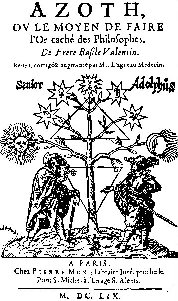
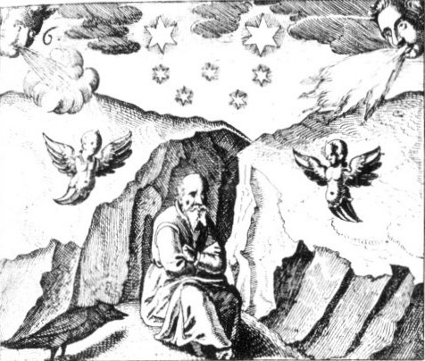
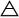

AZOTH
OU LE MOYEN DE FAIRE L’OR CACHÉ DES PHILOSOPHES
DE FRÈRE BASILE VALENTIN
frontispice d'une édition de l'Azoth, 1659
PREMIERE PARTIE.OU LE MOYEN DE FAIRE L’OR CACHÉ DES PHILOSOPHES
DE FRÈRE BASILE VALENTIN

frontispice d'une édition de l'Azoth, 1659
ADOLPHE, VIEILLARD.
Vénérable Vieillard, bien vous soit, vous apercevant il y a longtemps, de loin, seul proche de cet arbre, pensant je ne sais quoi en vous-même, je ne puis plus tarder que je ne m’approche de vous, pour m’informer du sujet de cette méditation. 1
LE VIEILLARD.
Pour vrai (ô ! jeune Adolescent) maintenant il m’est permis de connaître les choses qui me semblaient en mon jeune âge incroyables et hors de raison, car lorsque j’étudiais, bouffi d’orgueil, je me présumais savoir toutes choses, et maintenant à la fin de mon âge, je prends plaisir de rechercher avec grand soin, ce grand livre plein de difficulté de la nature, encore que je vois toutefois toute occasion et longueur du temps, passer comme une eau coulante, et de quoi grandement je me plains. 2
ADOLPHE.
C’est à la vérité ce que j’admire en toi (ô ! Vieillard) quand je considère les affections si contraire entre nous : car il te semble que le temps s’envole devant la saison, et les jours me semblent aller trop lentement, pour cette cause il y a longtemps que je désire monter à cheval et trouver compagnie plaisante qui me puisse ôter la fâcherie que m’apporte le temps coulant si lentement. 3
LE VIEILLARD.
Certainement, ô ami, je vous vois en la fleur de votre âge, d’une face libérale, partant je serai très aise de savoir votre nom, et votre race, estimant que n’aurez désagréable, si tout soupçon de fraude ôté, je demande votre nom, et la condition de votre vie. 4
ADOLPHE.
Mon nom est Adolphe, et ma Patrie Hassie, laquelle m’a enseigné les lettres dès mon bas âge, et avancé en âge, j’ai laissé les études, et ai pris la marchandise, et n’ayant ni Tuteur, ni Gouverneur, même administrant mes bien paternels, j’ai eu envie d’aller voyager, et voir les terres les plus éloignées, et certainement avant toute chose, il me plairait d’aller à Rome, maîtresse de l’Univers, avec compagnie, toutefois je désire entendre votre conseil, comme homme bien versé à l’usage des choses et expérience. 5
LE VIEILLARD.
Mon conseil ne vous manquera pas, pourvu que vous ne refusiez d’obéir au bons avis que je vous donnerai, parce que j’ai moyen de vous en aider plus facilement, ayant la connaissance de ces lieux.
ADOLPHE.
J’estime qu’il me sera loisible de vous obéir à vous principalement qui êtes vieux, et avez l’expérience des choses : de grâce montrez à celui qui erre, et fuit les chemins obscurs, vous jugerez avoir trouvé un auditeur docile et attentif.
LE VIEILLARD.
Vous dites mon fils, que vous avez désir de voir Rome, mais tenez-vous pour persuadé que j’ai vu véritablement cette tête de l’Univers, mais étant maintenant fait plus sage par l’âge, je suis plus avisé et attentif aux périls et dangers. Or suivant mon avis, ne veuillez converser longtemps en ces lieux, car ce lieu-là est à la vérité, ce que je vous dirai plus amplement ci-après. Mais il me déplaît grandement que je vous vois accuser la longueur du temps en si parfaite santé, bien que nous n’ayez enduré la violence d’aucune maladie, étant en cette fleur d’âge. Je souhaite donc que vous estimiez ces choses devoir être prisées avec plus de considération, car vous voyez que j’ai plutôt acquis ces choses en moins de temps, que je n’ai passé cette longueur de ma vie : il n’est licite de passer le temps en oisiveté, mais plutôt soigneusement, et avec diligence, s’adonner à la connaissance de Dieu et de ses œuvres, et y employer les forces de nos sens, car nous sommes créés à l’Image de Dieu, à cette fin et non pas à la semblance des bêtes, qui ont été produites pour notre usage. Nos yeux donc soient ouverts, et nos oreilles attentives pour louer Dieu, fuir l’oisiveté, et employer le temps aux études. 6
ADOLPHE.
Véritablement, mon Vieillard, il me semble avoir déjà compris les choses qui me sont nécessaires, car j’ai acquis la connaissance de la langue latine, et la notice, recueillie de la doctrine Aristotélique. J’aperçois bien qu’il n’est de besoin de se travailler tant en ces études principalement quand je reconnais que toutes choses sont imparfaites et vaines, et qu’il n’y a aucun Maître ou docteur de l’art, qui conduise les actions en telle sorte, sans fraude et tromperie, qu’il puisse acquérir dextrement la fin désirée. L’étude de l’astronomie, qui devrait être devant tous autres Arts très certain, et indubitable, est du tout incertain, trompeur et inconstant, on fait pareil jugement de la Médecine. Qui est celui qui considère les mauvaises coutumes et erreurs qui se glissent dans les esprit sacrés des Théologiens, vu que l’on ne doit douter de la Sainte Ecriture, de sa fermeté et constance, et néanmoins elle est presque prise en divers sens de tous, et n’y a fin aucune des controverses, par icelle les uns épiant la vie d’autrui, les autres tuent l’âme, les autres pourchassent les biens, et n’y a fin aucune de larcins, de rapines, de débats, et querelles, et chacun a coutume de louer, et dire ces œuvres être, ou de grande doctrine, ou de prudence, ou de force. Mais encore que jeune, je ne puis consentir à ces choses, bien que je n’étudie plus principalement à cause que je vois que le vrai but est de chacun presque délaissé, & que ces jours passés il me fut reproché par un certain villageois, que les plus doctes sont les plus méchants, & les plus pernicieux : & aucuns craignent (non sans raison) que les doctes porteront la peine de cette chose par leur propre méfait : Et n’y a raison aucune pour laquelle nous nous retirons de la vraie & céleste doctrine, vu qu’elle nous a été divinement délaissée par le Verbe Incarné, comme je l’ai ci-devant entendu de vous. Mais pour mieux dire, la sagesse humaine & le cercle inconstant des doctrines est imparfait, & crois que vous serez de mon opinion en ce. 7
LE VIEILLARD.
Il est bien vraisemblable, & je m’attribue la connaissance de la langue latine, mais la notice des langues étrangères n’a point de lieu propre, ni péculier, & ne semblent nécessaires aucunement : comme est la langue Hébraïque, & Grecque, par lesquelles la connaissance de tous les Arts nous a été anciennement enseignée, & nous voyons aussi que ces langues étrangères sont principalement nécessaires aux maisons des Princes, à cause des affaires diverses, & est un excellent don de Dieu, lequel paraît à l’exemple de ceux qui édifiaient la Tour de Babel, entre lesquels y eut confusion merveilleuse des langues, à celle fin qu’épars par toutes les contrées, & parties du monde, ils ne se pussent accorder. Toutefois ces choses étaient tellement gouvernées de Dieu, très bon, & très grand : qu’ils se servirent, & par la force du Saint Esprit (les dévots de tous les Gentils amassés) cette Tour, bâtiment fol, a été convertie par le ministère des Apôtres, en Temple de Dieu, saint & sacré, dans lequel sont entendues les louanges de Dieu, car la confusion ne plaît à Dieu, comme au contraire le Diable est Auteur de discorde, & querelles, & Dieu en Trinité nous demande la paix, & la concorde, même de toutes choses, Cette est la paix, apparaissant par-dessus tous, en laquelle le monde a été fait, & reluisent les Gouvernements des Royaumes en laquelle Jésus Christ notre Sauveur, & ses Disciples, nous ont laissé un exemple qu’il faut imiter avec soin. Et cette, ces choses suffiront de la connaissance des langues diverses, mais quant au salut des âmes, il n’est pas nécessaire d’employer son âge pour acquérir la connaissance des langues, mais il est expédient que nous entendions les sermons sacrés des Prédicateurs, & que nous lisions les Ecritures Saintes avec diligence, comme ils sont, es principales trois langues, la langue naturelle est proposée à tous, de même la Philosophie naturelle, & le soin d’acquérir des biens de fortune. Mais les sages mondains, & les rusés de ce siècle prennent chemin divers, non content du gouvernement ordonné de Dieu, cherchent les étrangères & contraires : De là le précieux trésor du temps est dissipé, & les Ames en grand danger de succomber à la fin du siècle, que Dieu visitera la dernière Ville de Jérusalem, c’est-à-dire, le monde universel, & le jugera. Aussi semblablement paraîtront les trois ennemis capitaux, & principaux, les spirituels comme ils étaient devant la venue de Jésus Christ, & sa Passion, mais à son dernier avènement leur conseils seront vains & ridicules devant le Tribunal de Jésus Christ. Si donc il arrive que ceux-là viennent par ci-après, nous connaîtrons la fin du monde approcher : car en même temps les diverses sectes des Pharisiens, Sadducéens, & Esséniens se lèveront ; savoir si les Pharisiens Opérateurs n’étaient pas arrêtés à la terre, occupés aux œuvres externes, n’ayant connaissance de l’Esprit, ni de la venue du Messie. Les Sadducéens ne niaient-ils pas la résurrection des morts ? Les Esséniens remplis de l’Esprit Anabaptiste ne combattaient-ils pas contre la Sainte Trinité ? le premier blasphème contre la puissance de Dieu, le second contre la miséricorde, & le troisième plein d’injure contre le juste & vrai Esprit de Dieu. On connaît de là que les hommes sont toujours contraires à la loi de Dieu, & bien qu’ils fussent plusieurs en nombre & diversité de sectes, toutefois étaient nommées les principales, lesquelles tâchaient de nuire en la doctrine de la Sainte Trinité : car les uns d’Orient, les autres d’Occident, changeant seulement leurs noms, multipliaient de jour en jour en malice, & les juifs étaient en petit nombre, & y avait peu de juifs qui fussent adonnés au vrai culte, lesquels menant une vie secrète, avec grand soin, ils fuyaient les embûches de ce monde. Il faut donc éprouver tout esprit, mais qu’un chacun de nous s’éprouve soi-même par le Verbe divin, comme par la pierre de touche ; que si ainsi est, cet Esprit en épluchant d’un chacun la conscience, demeurera à toute épreuve ; Ces choses soient dîtes de la connaissance des langues, & tenez pour certain que la conservation naturelle, journalière, & éternelle de l’homme & sa connaissance ne consiste seulement à la recherche du corps animal, (car il n’appartient qu’aux hommes d’errer) mais plutôt en l’acquisition de la perfection de l’une & l’autre partie, c’est-à-dire, tant du corps que de l’esprit, au Verbe Divin, laquelle conservation l’investigation de nature doit suivre, car nous prenons de Dieu notre origine, nous retournons à lui même, & en icelui nous nous arrêtons, car le Verbe est la seule règle & le sceptre, & la nature la règle de toutes créatures, préparant la voie pour l’habitation de l’âme & du corps, par lesquelles choses on connaît certainement le sage, aimant Dieu. Aristote n’a pas en vraie connaissance de toutes ces choses, encore qu’il fut de grande doctrine, & excellent par-dessus tous, en subtilité de raison humaine, car il est permis de le voir aveugle aux choses de ce monde. Il en faut autant dire de ses sectateurs, encore que leur nom soie en grande estime & autorité envers plusieurs. Or devant toutes choses il faut exactement considérer le temps, & suivre l’étude de vérité & justice de toute notre force, & implorer l’aide du Saint Esprit, qui nous élargit la connaissance des choses spirituelles, & virilement prendre garde que par les vices nous ne tombions dans le labyrinthe de ce monde mais suivant le bien & équité, & ne permettant écouler un jour ni heure sans travailler, toutes nos actions conduisions à la gloire du nom de Dieu, & au profit du prochain.
ADOLPHE.
Vous avez si amplement parlé de toutes ces choses, mon Vieillard, qu’à peine en ai-je retenu quelque partie, dont je vous puisse répondre, je vois bien qu’il faut suivre le bien en toute diligence & soin, & n’estime pas qu’il soit bon se hâter de répondre à tous les points ensemble, mais lentement, & après y avoir bien songé.
LE VIEILLARD.
Il faut apprendre, mon ami, les choses que vous confessez ignorer encore, car je confesse que par le moyen des sages & anciens, je sais le chemin facile & désiré, lequel ne désespérés pouvoir atteindre, pourvu que vous y apportiez la volonté & diligence requise.
ADOLPHE.
Certes j’ai grand désir d’entendre de vous toutes ces choses, & emploierai toute mon étude & labeur pour satisfaire à mon désir, principalement quand je connais que toutes ces choses son utiles & honnêtes.
LE VIEILLARD.
Devant toutes choses est à considérer avec beaucoup de raison la noblesse & excellence des sept dignités, lesquelles je vous mettrai par ordre maintenant, qui sont, la santé heureuse, & la charge soigneuse du temps, laquelle est triple, mais est à rejeter le soin de la bonne grâce, de l’autorité & estimation humaine, comme aussi de la force, & de la puissance, & des richesses, & de sa propre commodité car ces quatre sont dons desquels ont accoutumé les hommes d’abuser, sans y prendre garde. Que si Dieu très puissant, & très grand, ne nous visitait à cause d’iceux dons par afflictions & tentations, & quelques fois par mort soudaine, aussi ne patientait ( comme par manière de dire) de châtier les humains ( car devant lui il n’y à point égard des personnes, considération de dignité, aristarque l’esprit de l’homme, ignore ce qui est, & se fait soir & matin ) nous parviendrons facilement à la contemplation & connaissance de ces biens. Mais un chacun de nous a aussi soin, après le salut de l’âme, de l’éternel & perpétuelle santé, de la paix durable, de l’angélique beauté, de la force & céleste sapience & des trésors de la gloire, lesquelles choses nous nous promises, & en attendons le fruit & communication par notre Sauveur Jésus Christ, mais non pas en ce corps corrompu & gâté. Si nous persévérons jusqu’à la fin de cheminer en Ses voies & enseignements, & jusqu’à l’arche vraie de considération. Car qui obéira à la volonté Divine, découverte & démontrée au livre de vie, son nom ne sera effacé de ce livre de vie, car nous sommes tous appelés. Encore que véritablement je désirerais dire quelque chose de la gloire de ce monde, laquelle est vraie, toutefois est nulle, & du tout morte, comparée à la gloire céleste, encore qu’elle soie un trésor très précieux, car je la reconnais telle, sinon qu’elle est caduque & vaine, non pas perpétuelle & immortelle comme la gloire céleste, Jésus Christ. Or heureux & vraiment heureux ceux, l’esprit desquels Dieu illumine par les afflictions, & les conduit jusque là où il semble que les choses temporelles n’ont point d’efficace, car alors le débat spirituel, la lutte & les armes, paraissaient à ceux qui en usent : Mais je suis d’accord que cette force dépend du seul Verbe de Dieu, & est concédée aux hommes à l’article de la mort, mais non pas à tous ; de là aussi prenant les choses au rebours qu’elles ne sont, & faisant peu de compte de la vie céleste, nous menons une vie du toute oiseuse & voluptueuse, estimant que nous n’avons qu’a combattre la nature, bien qu’il en aille autrement, d’où vient la sévérité en toute la vie de l’homme, qui fait office de tyran. De là est évident que l’esprit de l’homme est assujetti aux passions & tourment, aussi comme l’esprit a le premier péché, il a consommé les péchés en second lieu par son corps. En la même façon le chagrin perpétuel & l’affliction précèdent la mort, & la fait paraître à l’homme plus horrible que toutes les choses, & principalement à ceux qui ont mené une vie sale, vilaine, & malhonnête, alors le remords de conscience traverse les âmes des hommes de mille tentations. Plût à Dieu que nous connussions vraiment la gloire d’icelui au temps de la grâce offerte, & que la puissions comprendre des yeux, & des oreilles, comme constitués au précèdent, & à l’avenir, par son verbe, dans le quel sont cachés les trésors célestes & éternels, & qui demeurent après la fin & désolation de toutes choses, bien que toutes choses soient remplies de la Majesté Divine, & que d’icelle toutes les créatures & œuvres de ses mains portent témoignage au Ciel, sous le Ciel, en terre, & sous la terre. Car en toutes ces choses, il était loisible de contempler Dieu souverain, & maître en la puissance de sa vertu, & en sa bonté : Que si nous considérons cela avec diligence, nous trouverons qu’il nous convient contempler les grands trésors de la sagesse, afin que, outre la connaissance de son verbe, tremblant devant sa face, à cause de l’imbécillité de notre esprit, nous puissions acquérir iceux trésors ( qu’à grand peine pouvions nous jamais espérer) quand nous considérons Dieu très grand & très bon, avoir créé toutes choses par ordre, bon, & décent en notre considération. Car l’homme contemple vraiment Dieu en Esprit, & peut se réjouir en icelui quand il sait qu’il est en Esprit l’Image de Dieu, & qu’il veut conduire les actions de sa vie selon la loi de Jésus Christ, premier Adam, & précurseur des actions, à l’utilité du prochain. Or en la vie future & parfaite, nous aurons connaissance entière de la gloire divine, sans aucun travail & peine nous apprendrons ce que en cette vie nous sommes contraints de dévorer en cette vie là, l’honneur & la gloire du nom de Dieu sera parfait, & demeurera à perpétuité, car nous avons aperçu sa miséricorde renouveler tous les jours, & sa gloire ne pourrait être assez chantée par la voix des Anges, & ne pouvons nous autre hommes assez diligemment rechercher & louer les divins mystères, si le Saint Esprit ne nous assiste. Or les méchants qui ne regardent qu’à leur profit particulier, ont toujours devant les yeux l’affliction perpétuelle de ce feu éternel la faim & la soif les accompagne, la vision des Diables, la froideur & chaleur intolérable qui même affligent & tourmentent les Démons, encore qu’ils ne puissent sentir les passions élémentaires mais seulement sentiront les peines éternelles & spirituelles, desquelles choses nous ne pouvons rien dire de certain, sinon ce que nous avons épuisé dans les mystères du Verbe Divin. Aussi que nous devons considérer & examiner l’éternité, & la durée du temps, qui sera à jamais, & prier Dieu tous les jours, & à tous moments afin qu’il nous délivre de l’ennemi, qui tache de nous opprimer par infinies tentations & maux, en toutes nos voies & sentiers comme aussi les autres créatures & les éléments, les corps célestes & les esprits qui s’efforcent de nous nuire, si Dieu en cette partie ne nous aidait. Or sur toutes choses est nécessaire la prière fervente, par laquelle nous demandions l’aide & secours du Saint Esprit, afin qu’aidés de sa grâce, nous entendions & apprenions sans relâche la parole de Dieu, par laquelle parole nous avons confiance en Dieu, qui est la règle & la pierre de touche de notre vie, quand lui même dit ; faites cela, & vous vivrez. Et en autre lieu, qui a péché fasse pénitence, & ne pèche plus ; car il ne se réjouit pas de la mort du pécheur, mais veut sa conversion, & qu’il vive. Mais pour ce qui touche la connaissance de notre chair, il semblerait de prime face qu’il n’y à aucune puissance céleste, la colère de laquelle, & ses peines, seraient à craindre, quand nous ne pouvons voir de nos yeux, & entendre autre chose, sinon choses caduques, mortelles, & terrestres, & non pas la volonté Divine. Mais les choses sont bien autrement, car nous avons Moise, & les Prophètes, & la voix qui crie au désert, qui annoncent la parole de Dieu, & sa volonté, & préparent la voie, de laquelle nous soyons estimés dignes en ce grand jour de notre mort, & universel jugement, quand toutes les actions des hommes seront examinés selon la règle du livre de vie, & le témoignage de l’esprit, & la sentence sera donnée contre toute chair vivante, car alors les Infidèles verront celui, duquel ils ont percé le côté, quand ils ne l’ont voulu voir invisiblement en esprit, & parfois, s’ils n’ont mis les doigts aux plaies à lui faites par les juifs, considérant plutôt les choses qui conviennent à la nature de ce monde, que celles qui sont attribuées au Roi Céleste.
ADOLPHE.
Il me semblait certainement entendre la prédication de quelque pasteur, bien que je ne puis nier que ces choses spirituelles me sont à charge, & qu’il n’est pas permis ordonner les actions de ma vie selon cette règle, mais par aventure & aucunes fois on se plait d’avoir appris & parfait ces choses. Cependant toutefois je m’efforcerai faire toutes ces choses diligemment, & autant qu’il me sera possible, & que les forces de notre imbécillité humaine le permettront, & d’autant que vous avez fait mention du trésor de ce monde j’ai grand désir de savoir de vous qui est ce trésor mondain, car il me semble l’avoir il y a longtemps connu, & qu’il n’y en ait autre que les biens & richesses de ce monde, que s’il y en à un autre contraire à mon opinion je souhaite grandement en savoir de vous la description & entière connaissance.
LE VIEILLARD.
Savoir si j’estimé que tu désire la connaissance entière de ce quand tout le monde brûle de le savoir: Mais aies cela pour assuré, que ce trésor est l’essence spirituelle & pleine de vertu non seulement abondance en richesses mais aussi en science de médecine : & certes d un tel breuvage médicinal, par lequel les hommes sont délivrés de maladies insupportables par la faveur & grâce divine ; Auxquelles maladies même un autre médecin ne peut donner soulagement. Or ce mystère surpasse de beaucoup toute l’excellence de l’or & de l’argent, & aiguillonne la raison humaine, & est plein de mystères qui semblent aux autres incroyables : de toutes ces choses vous pouvez lire la révélation Hermétique de Théophraste, je ne vous veux pas dire maintenant quel il est, car ce mystère est un secret caché dès le commencement du monde, jusque ici, & est telle la volonté de Dieu, & ne vous révèlerai plus amplement ce sceau de Nature, à la façon des anciens Philosophes, & ses secrets sont assez apertement & au long déclarés pur les auteurs, mais par providence divine il a été concédé que ce mystère soit révélé aux pieux & dévots sectateurs de cet art, car dès le commencement il connaît toutes les choses futures, & telle est la providence divine, aux pieds de laquelle les hommes doivent jeter les faisceaux d’orgueil.
ADOLPHE.
Encore que vous vous soyez efforcé jusqu’ici de cacher ces choses par une couverture pure spirituelle, toutefois connaissez & entendez maintenant ce que vous voulez inférer de là, car ce mystère est la vérité & la pierre des Philosophes mentionnée en leurs écrits, composée de la première matière : savoir est, de Sel, Soufre & Mercure. Tous les livres font mention de cette pierre Philosophique & tous les jours ont été mis en lumière plusieurs écrits, & mêmes ai connu quelques-uns qui adonnés à cet art, & m’en ont conféré, & ont accoutumé de montrer des esprits, lesquels moi-même ai changés en quelques lieux. Et encore qu’à la vérité ils soient soigneusement & artificiellement travaillés, toutefois sont corrompus, & malicieusement changés d’iceux. De là l’imprimeur & le vulgaire, ignorant, se sont trompés & le gain est pour ce seul rapétaceur, d’où je reconnais un grand scandale. Outre ces choses nous ne voyons d’aucuns la fin & l’effet de l’art. Et les artistes sont semblables au rare & noir Cygne, qui ont trouvé son vrai usage, aussi qu’à plusieurs es écoles les préceptes de l’art sont tenus pour fables & sornettes, ce que j’ai entendu des plus doctes, qui disputant avec les artistes, les ont appelés rappetasseurs, imposteurs, & impudents, à cause du peu de certitude &de constance qu’ils ont en leur art, & jamais je ne croirai que ces extracteurs de l’art puissent produire de l’or & de l’argent des autres métaux inférieurs, ou bien je pense qu’ils les font, ou par la vertu divine, ou par enchantements, ou par le mystère des démons, principalement quand j’ai entendu que plusieurs étaient soupçonnés, non sans cause, avoir familiarité avec les démons. Mais je désire entendre de vous (home vénérable) plus soigneusement, à cause que je vois que vous en avez la certitude, bien que vous refusiez de me révéler les mystères principaux de l’art : Mais ordonnez de cet art, & donnez plus sain jugement de la transformation des secrets de nature, savoir si ce don est concédé aux hommes de Dieu, très bon, & très grand car quand j’y pense ; je suis grandement étonné quand principalement il me souvient avoir lu quelques choses sur ce sujet, & me semblait moins pouvoir entendre leur sens, & que les trompeurs de l’art ont accoutumé d’user de manière de parler, caché & différant des autres, de là procèdent les dépenses vaines de tant d’années, de frais & de labeurs immenses, qu’il n’est loisible de crier que l’espérance est du tout douteuse incertaine & trompeuse qui nourrit les enfants de l’art, principalement quand le vrai effet de cet art n’est vu en aucune part.
LE VIEILLARD.
Mais, ô ami, je vous montrerai la fin & je vrai effet de cet art, afin que vous sachiez la certitude d’icelui, & que je la possède vraiment, mais que cela soit dit de la pierre, & vous persuadez que j’ai vraie connaissance de la racine de cet arbre, ensemble avec les choses nécessaires à cette étude, laquelle racine toutefois est inconnue de tous les autres, & du vulgaire. Ne vous lassez pas quand vous verrez que je serai plus long que de coutume quand je disputerai de ces choses : car la raison de cet art le requiert, & les choses principales premières & excellences doivent procéder en après les terrestres. Or je répondrai ci après avec plus de longueur & avec questions que vous m’avez proposées démontrerai évidemment avoir dit choses vraies.
ADOLPHE.
Je désirerais devant toutes choses savoir la raison pour laquelle nous ne connaissons aucuns artistes qui aie acquis la perfection, & sache exactement la transmutation des métaux, au contraire cet art est méprisé des plus doctes, qui toutefois à bon droit en devraient avoir l’entière connaissance, quand principalement il n’est sans fruit & utilité, bien que je n’aie entendu, ni vu en aucun lieu, aucun qui ait acquis par ce moyen les richesses de Crésus. Et encore vu que vous vous attribuez la connaissance de cet art, vous êtes pauvrement vêtu en Hermite. Mais si j’avais la connaissance de la procédure de cet art excellent & porte richesse, j’amasserais de grands trésors, & les richesses du monde, & achèterais des états & dignités si grandes, que les plus puissants Rois du monde s’en épouvanteraient, & en auraient envie, car les artistes faux en promettent de même aux autres toutefois je désire entendre votre opinion de ces choses.
LE VIEILLARD.
Il Semble que votre opinion soit semblable à celle du vulgaire de ce monde, & de tous les fols qui cherchent avec soin les trésors des richesses corruptibles, & les allèchements des voluptés, l’intention des philosophes & leur avis est bien autre, car ceux ne sont dignes du nom de philosophes, qui courent après telles folies, mais ceux qui s’adonnent soigneusement à la connaissance entière des mystères divins, & emploient leur étude & labeur au servisse de Dieu, très bon & très-grand, chassant d’eux la vanterie, l’ambition, & le soin d’amasser des richesses terrestres, encore que nécessaires, & que Dieu nous les élargisse miséricordieusement pour cette vie, les études de ce secret sont bien autres, l’intention est bien différente qui s’occupe en la seule acquisition laborieuse de l’argent & richesses, & au superbe fat des dignités en haine desquels les Philosophes ont de coutume voiler ces mystères de l’art, de peur d’encourir la violence, & oppression de la famille de Nembrot. Et est même raison pourquoi ces secrets sont cachés à ces bateleurs, & joueurs de passe-passe, car il s’ensuivrait en la publication de ce mystère une grande confusion & trouble de chaque ordre de ce monde, vu que toutefois la distinction des ordres a été établie de Dieu, & qu’elle soit très nécessaire pour entretenir les hommes en paix & concorde : car Dieu très bon & très grand a tellement épars cette distinction d’ordres & degrés entre les humains, que les uns serviraient aux autres, & les conserverait en paix jusqu’à ce qu’ils fussent conjoints les uns des autres, tout ainsi que le Philosophe Artiste sépare l’un de l’autre, l’âme, le corps, & l’esprit, & les conjoints semblablement. Or celle divine séparation de Dieu très bon & très grand, ne doit être faite d’aucun, s’il n’a le commandement du Verbe de Dieu, de réprimer les méchants, pource que seul il est l’unique vérité & justice, & ce qui est tiers cela, ce n’est que blasphème & abomination devant Dieu. Car de là le Magistrat qui tient la place de Dieu, a pris entière puissance divine, aussi sera la punition & vengeance de la loi contre celui qui répand le sang humain contre ce précepte, car Dieu n’accepte personne. Or cette séparation divine est avec diligence considérable, & en grande estime. Mais il semble que ces choses soient dites hors de propos, qui toutefois apportent grand profit & utilité au genre humain, & pour cette cause il m’a semblé bon l’ajouter, & à la vérité au livre d’Ezéchiel le Prophète, il est fait mention de quatre vents, qui soufflèrent les os morts, qui étaient environnés de chair par icelui, & là même est parlé de l’esprit, qui a détenu ces ossements, mêmement de la dissipation & retour des vents. Nous voyons aussi en l’agonie de la mort toutes les parties des hommes être séparées l’un de l’autre, car alors les quatre éléments, l’esprit, & l’Ame, lesquels sont manifestés du nom d’esprit, sont départis, & se séparent l’un de l’autre : En leur lieu, l’eau & la terre élémentaire sont conjoints, & un autre air aussi & feu, sont épaissis. L’esprit astral de la vie, l’homme interne & invisible, retourne au Ciel, & est élevé sur les éléments, l’âme va au sein d’Abraham, suivant les promenés de Dieu, & repose sur l’autel, jusqu’à la consommation du monde, & que toutes choses soient accomplies. Nous voyons aussi comme la terre nous fournit de viandes journalières dans lesquelles est caché cet esprit des Eléments, comme la nourriture, & aussi céleste essence, en pareille raison nous avons aussi la nourriture de l’eau & du feu, par lequel nous conserverons le tempérament du corps terrestre, lequel contient le feu & l’eau spirituelle, pour renforcer l’esprit intérieur. Car comme la terre à ces deux choses en soi, pareillement le Ciel, qui est dit quintessence, car il est bien plus noble que les éléments, & est la viande de l’esprit ; comme le Verbe de Dieu est la nourriture des âmes, & est fait corps, afin de donner la béatitude céleste au corps, à l’âme, & à l’esprit, encore qu’il ne soit viande & nourriture corporelle, mais le lien & sceau de la promesse, & du livre de la vie, en témoignage de la vérité, à cause de notre foi petite, & de la connaissance faible de la divinité, tant Dieu aime grandement les choses naturelles & spirituelles, & veut que toute sa créature soit en l’homme, & en la conjonction de Jésus Christ, par lequel les péchés sont pardonnés. Car comme le Verbe divin est le principe de toutes choses, pareillement aussi est le principe de l’image de Dieu, car pour écouter le Verbe de Dieu : de cette fleur du Saint Esprit commence la foi, de la semence de cette fleur naît un arbre des bonnes œuvres, encore que les bonnes œuvres, ne méritent le salut éternel, mais la foi au verbe de Dieu ce que nous disons impossible. Ensemble être fol devant notre face, ce verbe est un amour magnétique par lequel il nous attire à lui avec les bons & ne peut être séparé de personne, n’y a pareil amour Astral magnétique, & la nature terrestre lesquelles choses on doit considérer avec la balance très exactement, comme est grandement à considérer en la connaissance de nature, ce que l’homme intérieur fait en la nature, lequel homme intérieur est invisible & céleste, mais l’âme est super-naturelle & super-céleste, desquelles choses nous ne savons rien que ce qui nous a cité révélé de Dieu. Or la nature proposé les esprits naturels, encore qu’ils soient grands, & ont le soin d’une considération secrète, & l’homme corporel ne peut entendre les choses spirituelles si l’esprit de vérité ne lui était révélé par le Roi des esprits, & le Saint Esprit, par icelui tous les arts, la sapience & la science sont examinés, cet esprit excite aux Chrétiens un feu super-célestiel d’amour, & un esprit magnétique de sapience, & nous enflamme & nous lave de pure eau, & nous rend nets, afin que nous fassions pénitence pour nos péchés, & que ne mourions tous les jours en nos offenses, d’où vient le récit fréquent de l’eau & du feu, du sang & de l’esprit de l’eau, qui est celui qui donne la vie, car notre péché est de couleur sanguine, & la récompense du péché la mort noire, la croix & l’affliction, mais des dévots & pieux la robe blanche & la couronne de gloire. Ces choses amplement dites suffisent maintenant : venons à l’explication des questions de vous proposées, lesquelles je vous dirai par ordre, & montrerai la certitude de cet art par la chose même, en telle sorte que vous n’en pourrez douter. Or quand à ce qui appartient à l’autre objet par lequel vous tenez que plusieurs doctes ont une connaissance fort petite de cet art, sachez que c’est la volonté de Dieu, & que cela est fait pour quelque considération & certain profit, car Dieu réprouve toute superbe & ambition & donne ce trésor aux humbles & pauvres & non pas aux grands & aux enfants de ce monde, lequel trésor l’homme doit mettre à charge selon la loi du Seigneur pour son honneur & gloire, & pour soulager les pauvres, de peur que pleins d’oisiveté ne délaissions la charge de notre vie, mais que nous fassions les œuvres de notre vocation suivant la volonté, de Dieu. Que si ce trésor se donnait à tous qu’elle confusion ( je vous prie) serait ce entre les mortels : Et ne vois pas par quelle raison se pourrait vérifier le dire de Sirac : Mon fils, si tu veux plaire & servir à Dieu prépare-toi au jour de l’affliction ? ce qui est die véritablement de la pauvreté, diserte & imbécillité humaine, comme vous pourrez facilement conjecturer de vous-même, & n’est aussi baillé aux hommes d’user de ce trésor comme bon leur semble, car la nature de l’homme est malicieuse & dépravée. Or ne révélez ce secret à personne, & ne le donnez à l’âme superbe avaricieuse & ambitieuse, car c’est l’honneur & la seule gloire de Dieu, mais fais ainsi, si la fortune te favorise, garde-toi de t’enorgueillir, si elle tourne garde-toi de succomber, car Dieu est l’arbitre de l’une & l’autre fortune, & les modère comme il lui plaît, & n’est moindre vertu devant la science acquise, la rechercher avec soin que la tenir secrète quand on la sait, car si vous l’aviez révélée autrement qu’il n’est permis, cet art très grand part le nom & dignité d’art. De là un certain Philosophe dit Cache cet œuvre devant les yeux, de tous, comme la parole en ta langue, & le feu en tes yeux, même ne dispute en toi-même de cet œuvre, que le vent ne porte les paroles à un autre, lesquelles t’apporteraient de l’incommodité. Je vous ai fidèlement averti de ces choses, c’est à vous d’y prendre garde, afin que vous ne soyez tourmenté de corps & d’âme. Or l’abus de ces dons très excellents de Dieu, est très grand, lesquels Dieu donne de sa propre grâce & libéralité, aussi est-ce une grande ignominie & lâcheté de ces dons Philosophiques soient réitérées, & foulez aux pieds, & que les sciences soient gâtés méchamment des ignorants, pour laquelle ignominie aussi ils ne pourront voir cette lumière. Or le crime d’avarice & de luxure a tellement crevés cœurs des enfants de ce monde, que la Foi & la Justice n’est pas gardée à leurs domestiques, & tous droits sont subvertis. Je vous en réciterai un exemple, lequel j’ai vu de mes yeux. Il demeure en certaine ville un homme très riche & regorgeant de biens, père de plusieurs enfants avares, chiche & ne se fait pas du bien à soi-même à cause de l’avarice, il amassait de grands trésors à ses enfants, lesquels nourris par la mère en toute abondance de choses assurés des richesses de leur père, passant le temps en oisiveté, luxure & débauche, & comme ils croissaient en âge, aussi leur méchanceté & vie multipliait & comme le père fût décédé, tous les jours dépensant prodigalement en festins & banquets leurs biens paternels, plongés dans les vices & méchancetés, attendaient, insensés qu’ils étaient, l’accroissement des richesses ( comme il avait été auparavant fait) mais en vain : sentant de jour en jour la diminution de leur bien & richesses réduits en grande pauvreté, ne laissaient de commettre de grandes méchancetés, exposés au déshonneur & à l’ignominie, le reste de leur vie. Or toutes ces choses ont été la cause qu’ils ont été mal instruits, bien que premièrement ils eussent été enseignés en la connaissance des meurs & des sciences. Car en ce reluit la volonté de Dieu, qui veut que les ordres & degrés des hommes soient distincts & séparés, & que les uns servent les autres : Aussi tous les hommes en leur vocation & ordre sont serfs & mercenaires : Car notre Sauveur & Seigneur lui même à fait des œuvres serviles, & a lavé les pieds de ses disciples, mais l’honneur des uns est moindre ; des autres plus grand & nous sommes, comme il plaît à Dieu nous bénir. D’où la règle a été ordonnée du père de famille Dieu très bon & très grand, en la manière que tu serviras en ta vocation, de même je te récompenserai. Or Dieu en un jour distribue tellement les grands trésors des richesses, qu’ils semblent surpasser de beaucoup les richesses des plus puissants Rois, & toutefois ses trésors ne diminuent point, mais au contraire, tant plus il aura donné, tant plus il abonde, & c’est pourquoi Dieu doit être aimé devant toutes choses & sur toutes choses. Nous voyons arriver fort souvent des humaines richesses que celui qui amasse des biens par avarice, mourant laisse un successeur libéral prodigue, suivant le dire des doctes : Que les richesses ajoutent des cornes au pauvre, & précipitent le plus souvent celui qui les possède en extrême malheur, & aux tourments éternels de l’enfer. Car si quelqu’un a eu en abondance les biens & richesses de ce monde, a grand peine se soucie-t-il de la vraie santé, & ne pense à la paix céleste, & ne s’étudie par libéralité d’aider les pauvres, au contraire met toute sa diligence & tout son soin pour faire amas de grandes richesses, & cependant oublie Dieu, & les œuvres de piété. Or les jeunes hommes sont en grand danger en ces allèchements du monde, encore que la prudence supplée au défaut quelquefois de l’âge, mais les pieux sont contraints de boire le calice des afflictions, les méchants étant réservé aux peines d’enfer. Mais ce qui est plus à déplorer c’est que chacun se moque & se rie de ces choses, & que tous les enfants de ce siècle ne travaillent qu’à laisser des richesses & des honneurs a leurs enfants sans conscience, qui leur raconte sans moquerie qu’il faut chercher devant toutes choses la sapience divine, sans laquelle rien ne peut subsister en ce monde, d’où vient que le ver de la conscience ronge les cœurs dos misérables de diverses tentations en l’agonie de la mort ; car les hommes n’ont accoutumé de chercher le salut de leur âme en vraie & parfaite humilité.
ADOLPHE.
Il semble que les choses que vous venez de dire soient contraires entièrement au but auquel vous prétendez, bien que je reconnaître que ce que vous avez dit soit en ma faveur : toutefois ajoutés diligemment le reste, car j’en attends la fin bien attentif. Cependant j’ai désir de savoir, comment ce fait que cet art & les mystères des Philosophes ne sont révélés aussi aux autres, & qu’ils ne les connaissent, vu que nous voyons tous les autres arts souvent être sus du peuple, & quelquefois en y pensant exactement j’entre en grand soupçon savoir si cela est vrai.
LE VIEILLARD.
Vous avez entendu par-ci devant qu’il a été imposé silence aux enfants de l’art afin que cette science fut tenue cachée à cause de la puissance des tyrans de ce monde, & des méchancetés des paillards superbes, des usuriers, des luxurieux & des autres scélérats. Car tous les Philosophes cachent la vraie connaissance de cette science avec grand artifice, d’autant que aucuns ayant acquis la possession de cette divine science, en ont mal usé, ont perdu son usage & perverti les commodités, aucuns ayant été vexez par une more fâcheuse, & les autres étant prévenus de la mort. Or il est besoin que l’auditeur & le possesseur de cet art soit humble, pieux, taciturne, & débonnaire. Quand Dieu donc vous aura élargi la science & possession de cet art, gouvernez-vous en cette sorte, & ne l’allez vendre ça & là, mais plutôt employés vous à soigneusement & avec grande diligence à la connaissance plus secrète des choses, & avec œuvres de votre vocation, & fais du bien à ton prochain & a ton ennemi, car la loi du Christianisme nous oblige à cela : Il faut aussi résister de toutes nos forces aux ennemis de la foi, & soigneusement s’efforcer en cela, afin que les autres préparés à louer Dieu , ils chantent avec nous sa miséricorde, mais à cause de l’ingratitude plusieurs choses sont cachées, & l’ignorance engendre beaucoup de maux, la science au contraire augmente les biens, & est le rayon de la lumière. Il y eh à plusieurs qui s’efforcent & emploient à la recherche de cet art, mais ils ne s’étudient aux vertus nécessaires, principalement a le tenir secret. Ils tombent en une même infortune que ce Phaéton duquel parle Ovide, lequel ne su conduire le chariot de Phébus son père, aussi convient avec grand soin garder ce trésor. Que si l’homme a considéré seulement les paraboles et les mystères, qu’il pense être abondamment satisfait, quand il voit en la nature le sceau et image de la divine bonté être imprimée, car la nature parfait toutes choses diligemment, & certes plus parfaitement que l’homme même, qui toutefois est la très noble créature & plus proche de Dieu, raisonnable & aimée de Dieu, d’où paraît l’excellence de l’homme sur toutes autres créatures, & pour cette cause Dieu très bon & très grand lui a aussi proposé les préceptes & la vie éternelle.
ADOLPHE.
Je confesse à la vérité qu’il faut ici considérer de grandes choses, j’attends toutefois brièvement votre opinion des paraboles, principalement quand vous avez dit souvent qu’il les convenait bien éplucher.
LE VIEILLARD.
Mais pour mieux dire il les convient considérer devant toutes autres choses, & pource j’en ai fait mention telle que j’ai laissé presque les autres choses sans en parler, lesquelles sont infinies & non pas nécessaires. Car qui a eu connaissance de cette œuvre, il connaît par soi-même qu’il ne faut donner occasion aux opinions errantes, car ces moqueurs s’efforcent quelquefois vendre ces choses au simple peuple sous le sacré nom de la bible, lequel a de coutume les prendre à grandes brassées, aussi est ce chose impie & un blasphème de parangonner autre œuvre à la divine puissance, car le verbe de Dieu est l’échelle de Jacob : Et Jésus Christ est seul médiateur & la règle, par lequel toutes choses sont mises au livre de vie, en même raison nous voyons en notre œuvre naturelle, la vie & la mort, la résurrection & la création de tout le monde, les nombres, la mesure & le poids, l’accroissement, les forces & efficace des Etoiles & des Eléments, en premier lieu du Soleil & de la Lune, car par le Soleil la vie descend selon ce qu’il plait a Dieu, & pour cette cause est comparée au Soleil, & appelée de son nom, car tout ainsi qu’il est en haut, ainsi il est en bas, par lequel les merveilles sont accomplies. Aussi le Soleil purpurin, rouge & doré, est mâle & femelle, & serviteur de tout l’univers : contenant en soi les richesses universelles. Il est besoin noter deux choses en ceci, comme d’une chose & de deux, car Dieu très bon & très grand, à crée quelque chose de rien. Or cette chose était une chose de laquelle toutes les choses tant célestes que terrestres sont produites, car Dieu à dit, soit fait, & il était. Quand donc toutes choses ont été crées par son verbe, & après icelui était la nature universelle séparée de la chose & bonne eu son essence était après Dieu, & était son bon plaisir, car il était très bon, mais il s’était retiré quelque chose soudain de lui, & n’avait duré jusqu’au temps du grand monde, & à cause de ce, il était requis une autre chose, car par une chose il ne pouvait durer, comme il avait été fait dès le commencement à cause de la créature la plus débile, laquelle Dieu désirait ensemble, & disait croissez & multipliez, alors on multipliait tellement, que rien ne périssait à la fin du siècle, car c’était la bénédiction du Seigneur, laquelle par son verbe il départît à l’homme, & toutes choses font parachevées jusque à la fin par très grande obéissance, & sont conduites par le Saint Esprit, de même en est-il à Adam, & a Eue, au masse & à la femelle. Il faut observer ici comment la création se parfait par l’un & par l’autre, l’augmentation, multiplication, & conservation, & par le troisième l’administration, comme par l’esprit, ces choses doivent être examinées diligemment. Louange & honneur à Dieu en Trinité. En outre Dieu commandait & descendait à l’homme incontinent quant à l’essence, et lui assujettissait tout sans aucun défaut, & lui donnait puissance de manger de tous les fruits du Paradis, excepté le seul arbre de science, du bien & du mal, le fruit duquel lui avait été défendu, par aventure à cause de la malice du Diable à la volonté duquel finalement il se soumit par la désobéissance, car il faut connaître seulement le bien, & fuir le mal, par lequel le chemin est donné à l’ennemi, car Dieu est seul Seigneur qui conduit & administre toutes choses, & les créatures lui sont toutes sujettes : le commandement à introduit le péché quand les hommes ne s’en prenaient pas garde, par l’instinct & savoir du Diable, & de sa propre volonté : car le premier péché était blasphème & l’Idolâtrie, obscurcissant par ignorance toute science, mais pour dire mieux, convertissant en science, en connaissance du mal, jusqu’à maintenant, & en tous vices, méchancetés & arts du Diable, auxquels on renonce au Sacrement du Baptême, savoir en la régénération & rénovation de notre vie, au nouveau Adam, comme au bois de vie, qui a été ôté à nos parents au Paradis terrestre de la vie terrestre, toutefois promis en la semence d’une femme, Christ qui est l’arbre de vie & spirituelle & corporelle, par lequel non seulement l’âme reçoit la vie, mais aussi le corps. Car tout ainsi qu’Adam chassé du Paradis était envoyé au monde, jardin de ténèbres & d’afflictions, pour la mortification du sang & de la chair, de même si nous entendons la manne, c’est-à-dire le pain céleste, le verbe de Dieu, & que nous vivions selon ses commandements, & que nous croyons le verbe lequel a été fait chair, par icelui nous reprendrons la vie, & seront transportés de la maison d’ignorance au Paradis céleste, & comme la mort emportait & ravissait Adam, ainsi elle nous contraint de demeurer bon gré mal gré par le seul verbe de Dieu, Jésus Christ, duquel toutes choses sont, car nous mourons au vieil Adam, & nous ressuscitons en Jésus Christ nouveau Adam, comme il nous a précédé c’est pourquoi il est l’arbre de vie duquel nous devons manger bannis en cette maison d’afflictions, & à la vérité, comme au premier Adam a été défendu le fruit du Paradis par un certain moyen, aussi pareillement estimons n’y avoir autre règle, commandement, ou voie, ni a droit ni a gauche outre le verbe de Dieu, compris au livre de vie, lequel fermé de sept sceaux Jésus Christ a ouvert. Mais si nous désirons connaître choses plus grandes, & manger du fruit de l’arbre de science du bien & dis mal, l’on dira que nous voulons servir à deux maîtres, c’est à dire, à Dieu & au Diable, prenant le mensonge pour la vérité, & réprouvant la vérité comme mensonge, aussi nous recevons récompense digne de nos œuvres, & a été fait que nos premiers parents ont été chassés de la présence de Dieu vivants car Dieu n’est pas semblable à l’homme, mais les hommes one été faits à son image, afin qu’ils obéissent à ses commandements, & qu’ils n’y diminuent ni ajoutent : quand nous sont proposées la sapience & la science qui nous sont concédées en viande, du verbe Divin, duquel l’homme vît, & sont tirées du livre de vie jardin spirituel. Car toute chose bonne est d’icelui, & par icelui toutes choses sont faites, lesquelles il est permis comprendre des yeux & des mains, car la visible est fait de l’invisible, de même la foi prend son commencement de l’ouïe de la Foi, les bonnes œuvres c’est à dire de l’invisible le visible, & du verbe le Chrétien est engendré. Or les choses sont telles afin que l’homme de même raison agisse & opère, non pas qu’il se forme des questions oiseuses & frivoles de la toute puissance divine, car c’est le vouloir de Dieu, & la toute puissance qui a aussi baillé à l’homme semblable patron & exemple : mais Thomas incrédule ne pouvait parvenir à cela quand il connaissait seulement la nature humaine & la Science, & le Ciel élémentaire inférieur, & en premier lieu les choses intérieures comme l’eau & la terre, qui toutefois sont réceptacles & prisons de la mort. Or cette Philosophie est réprouvée de S. Paul, en laquelle il ni a nulle perfection, car la seule Philosophie céleste est consommée par la foi, espérance & charité. En ce lieu il est à noter, que comme toutes choses sont conservées par le verbe de Dieu, & que nous devons croire à la parole qui est sortie de la bouche de Dieu, ainsi Jésus Christ a déféré cet honneur à son Père, que rien n’est acquis sans foi, mais la plus grande partie des hommes ne croient les choses lesquelles ils ne voient, & ne considèrent que Dieu le Père, Dieu le Fils & Dieu le S. Esprit ne peut être vu de nos yeux chargés de péchés, comme aussi les rayons de son visage qui surpasse de beaucoup en splendeur le Soleil : Les hommes n’ont pu voir à cause de la nature pécheresse, quand il était avec eux en forme visible ; & lorsqu’il était en ce monde, encore que Jésus Christ nous assiste corporellement & soit à la dextre de Dieu, c’est-à-dire en la sacrée sainte pureté & Déité, comme il a accompli la volonté de son Père & est allé aux enfers, & a monté aux Cieux en chair & en Esprit, & parachevé tout en tout. Qui est d’entre les hommes celui qui puisse trouver en cherchant la grandeur & sagesse de Dieu, nous savons que le Ciel est son siège, & la terre est l’escabeau de ses pieds. Nous ne pouvons nous informer des choses célestes, ni connaître sinon celles qui ne sont donnés du verbe Divin, & lesquelles S. Paul a vues, & n’a tenu compte de dire, mais nous a laissé le Verbe ce céleste pain comme un sceau dans lequel consiste le salut de nos âmes, savoir la volonté de Dieu, vrai arbre de vie, afin que nous buvions son sang & mangions sa chair, & que nous croyons fermement que toutes nos choses sont, si les paroles de l’institution sont dites. Ainsi la parfaite nature démontre plusieurs merveilles en un seul miroüer, de laquelle semble avoir parlé assez quand les choses de l’Ecriture Sainte sont assez connues par icelle. Or celui qui fait la volonté de Dieu vois toutes choses & les connaît comme aussi certains d’entre les Sages Païens & Ethniques ont connu.
ADOLPHE.
Vous avez été si long en vos paroles que j’en ai oublié la plus grande partie, toutefois je désire entendre cela de vous, savoir, si cet œuvre de nature ne contient pas en soi un esprit qui soit cause de mutation, pource qu’il me semble que vous avez fait mention du second nombre qui est multiplication, il est requis pour cet effet un esprit vital.
LE VIEILLARD.
A la vérité l’esprit vital minéral est en cette œuvre qui se parfait après qu’il est préparé, suivant la dignité par l’Artiste : car Dieu par sa bonté infinie a constitué l’homme, Seigneur de cet esprit, afin que d’icelui il formât autre chose, savoir un nouveau monde par la force du feu, selon l’ordre & commandement donné de Dieu. Et à cause de ce l’homme ne parachèvera rien du tout, & est requis que toutes ses choses se fassent en la crainte de Dieu, par un moyen honnête & une pure conscience. Que s’il y en a d’entre le vulgaire qui ne parvienne à la fin de cet art, qu’il ne soit à scandale, encore qu’il soit devant les yeux des hommes, que chacun la voit, & souvent est employé à d’autres fins, toutefois plusieurs ignorent son vrai usage, ne sachant pas que ce grand trésor est entouré de ces ténèbres, d’où souvent c’est or très pur environné d’épaisse obscurité & de rouillure, est laissé dans la boue & vilenie, lesquelles choses sont ainsi faites par le droit ordre de Nature. Les Philosophes plus sages oyant seulement le nom de Mercure connaissent ce trésor & l’ont devant les yeux, bien qu’il soit invisible & spirituel, toutefois il est matériel, & est une vierge très chaste qui n’a point connu d’homme. Substance fragile, d’où on l’a nomme lait virginal, le miel terrestre des montagnes, lait, urine des enfants, & semblables autres noms : & en toutes ces choses plusieurs Artistes l’ont recherchée mais ils ne l’ont trouvée, car elle est préparée de matière métalliques & très bonne.
ADOLPHE.
L’or n’est-il pas cette matière à cause de sa noblesse, & qu’il est le plus parfait métal, il me semble que toutes vos paroles tendent là.
LE VIEILLARD.
Non à la vérité, mais il est besoin que vous entend ici de moi auparavant autres choses, car vous vous arrêtiez trop ardemment encore aux trésors de cet or terrestre, & n’avez pas assez conçu ce que j’ai dit, & véritablement je vous mettrai par écrit le dernier & principal mystère de cet art, & bien que en ce présent discours il me semble y avoir quelques doutes, il n’est pas utile toutefois de les expliquer plus clairement, & véritablement ce trésor n’est pas cet Or mondain commun ni l’Argent, Mercure, Soleil, Antimoine, Nitre, Soufre, ni autre chose semblable, mais c’est l’esprit de l’Or & le Mercure, qui est nommé des Philosophes la première & seconde matière propre & seul de la nature & de la propriété, Or très pur Oriental n’ayant senti la force du feu, sur tous excellent, plus mou & aisé à fondre que l’Or du vulgaire. Il est vrai mercure de l’or & antimoine, attirant ses qualités des corps s’il est liquéfié. Sa préparation n’est autre chose que le bien laver & le mettre en menues parties par l’eau & le feu, comme toutes les autres choses sont en la même façon préparées : afin qu’ils soient agréables à Dieu & aux hommes. Il convient exactement connaître qu’est ce que sublimation, distillation, séparation, digestion, purification, coagulation, & fixation, & rechercher diligemment cet œuf de nature, désiré de plusieurs dès le commencement. De ceci il y a plusieurs écrits, & entre autres du Comte de la Marche Trévisanne Bernard, & des autres, lesquels je te montrerai à la fin, & ajouterai plusieurs paraboles.
LE VIEILLARD.
Quand je considère que l’usage de cet art doit être acquis par beaucoup de sueur, & que sa possession en est périlleuse, & qu’il convient faire la vocation où nous sommes appelés de Dieu a le plaisir que t’avais pris auparavant me rend plus humble quand je vois que j’ai été trompé de vaine espérance.
ADOLPHE.
Estimez-vous que je vous aie dit ces choses comme par manière d’acquit, qu’il faut travailler grandement, & qu’il faut exercer les œuvres de miséricorde envers les pauvres, non pas envers tous les pauvres, mais ceux qui le sont vraiment, & avoir soin des orphelins, & des veuves, pour la gloire & l’honneur du nom de Dieu. Or l’honneur est du à Dieu plutôt qu’à nul autre, à lors les consolations sont demandées du Verbe divin, car le Verbe de Dieu précède grandement la nature, comme le serviteur suit le maître, & le père excelle en dignité la-mère. Il faut donc faire en sorte, comme si de cela il ne nous en appartenait rien du tout, mais plutôt travailler diligemment selon notre vocation pour l’utilité du prochain, & le profit de la République, & détruire les maux qu’apporte l’ignorance, car sans relâche la raison & le corps doivent faire bien, car l’oisiveté est l’oreiller de Satan, & est défendue sous grave peine, d’autant que de là proviennent toutes les énormités, la luxure, l’avarice, l’homicide, le mensonge, les impostures, & fraudes, imitant en cela leur nature même. Or notre œuvre jamais n’est oisif, mais travaille & opère sans cesse jour & nuit, jusqu’à ce que le temps sixième de ses semaines soit complet, & que son Sabath approche, car alors il repose & honore son Seigneur, l’homme auquel il doit servir selon le commandement de Dieu, obéissant à ses lois. En la même sorte les hommes doivent travailler, jusqu’à ce que nous entrions au Royaume éternel de Dieu. Voire mais toutes ces choses se font. Nature presque y contredisant, & nous fâchons quand nous entendons qu’il faut travailler assidûment pour le vivre, jusqu’à ce que nous retournions en terre, de laquelle nous sommes faits, à cause que l’oisiveté & le désir de commander plaisent à tous également, qui est l’occasion que nous sommes paresseux & fêtards en nos oraisons & prières, bien que l’on doive prier Dieu pour impétrer toutes choses : nous méprisons les uns comme pauvres, à cause qu’ils ont petit revenu, cependant avaricieux, & que nous sommes obligés de bien faire à nos ennemis, toutes les méchancetés ont pris place en nous, comme sont la colère, l’avarice, la haine, l’inimitié, la mutuelle défiance, & à cause d’icelles le très excellent bien nous est ôté, comme aussi celle science de médecine qui est cachée en ce bien, est inconnue des autres Médecins plus doctes : Car ce trésor ne s’apprend pas es écoles des Médecins, mais caché demeure devant leur yeux, en la même façon que l’esprit interne de la Sainte Ecriture était scellé aux Pharisiens, qui était le vrai Messie, & la médecine de l’âme, encore qu’il fût au milieu d’eux. Aussi il rendît grâces à Dieu son Père de ce qu’il avait caché ce trésor aux sages de ce monde, & l’aurait déclaré aux petits : De même aussi est dit de notre médecine naturelle, que la volonté de Dieu doit précéder quand elle est demandée par ardente prière, comme en toutes les autres choses mondaines, cette volonté divine dispose toutes choses : & de là s’aperçoit la vanité de ces médicaments de simples & sirops, qui courent entre les mains de ces faiseurs d’onguent, avec la perte de la renommée & estimation des médecins, au grand dommage des malades. Mais qui plus est, ces sirops sont bus par un très certain endommagement, & mort d’iceux, & les dépenses faites par les malades sont converties pour entretenir la superbe & luxure, comme il ni à pas longtemps qu’un panure homme se plaignait avoir été trompé d’iceux, & avoir employé presque tous ses biens, & perdu sa substance, si un homme de petite & basse fortune ne lui eut aidé. Ainsi nous voyons que plusieurs ont seulement ce soin, qu’ils veulent être en recommandation à la Postérité, comme Dieux, cependant ils négligent da tout le soin & diligence d’aider à leur prochain, d’étudier les bons livres, par lesquels la connaissance universelle de cet art s’acquiert. il est de besoin donc à tous de se peiner, en ce qui peut séparer le bien du mal, c’est-à-dire, qu’ils connaissent par modestie, patience, & humilité la vertu & les fruits du bon arbre, avec la racine triple, de même aussi honorent les fruits de l’âme, la Foi, l’Espérance, & la Charité, afin que nous sachions que c’est que vérité & justice, tant de l’âme que du corps, c’est-à-dire, du bien céleste & corporel, et afin que nous puissions facilement comprendre cette chose. La science Théologique & juridique nous est donnée de Dieu pour ce qu’en icelles consiste la pureté & sainteté de nature, & la vertu l’œuvre de la vocation, & la justice est singulière sapience, lumière, & philosophie, à cause de laquelle Salomon surmontait de beaucoup tous les autres hommes. Et à la vérité Dieu même a ordonné à un chacun les œuvres de sa vocation, & a commandé à un chacun de nous, de conduire ses actions prudemment, pieusement, & justement en sa vocation & devoir de la vie, selon la règle du Verbe Divin, comme serviteur de Dieu, & qui rendra compte de toutes choses devant le Tribunal du juge de toutes les nations, & devant lequel tous les faits des hommes seront révélés. Or tout bien vient de Dieu, ensemble d’icelui descend le sage & le fol, le riche & le pauvre, le fort & le faible : & qui méprise le pauvre & imbécile, il méprise celui qui l’a crée, car tout bien est de Dieu, & tous les maux viennent du Diable, comme fontaine & origine de tout mal. Mais par un particulier conseil de Dieu, le mal en cette vie tyrannise & donne de la fâcherie aux pieux & gens de bien : & bien que le Diable par sa propre malice s’efforce de dresser le mal aux détriment des hommes, toutefois tout mal sert de bien à Dieu & aux dévots, car le Diable même est contraint de servir malgré lui à la gloire Divine. Et notre péché est seul l’occasion pourquoi le mal est mêlé avec le bien en cette vie, nous nourrissant cependant la bonté & miséricorde divine, & à même fin les dix commandements nous sont baillés de Dieu, afin que nous séparions le mal du bien, pour fuir la damnation Eternelle. Mais facilement peut-on voir qui est la face du monde, & le soin, & les larrons avares qui se disent Chrétiens, par le Sacrement de Baptême, imitent par les exactions immodérées d’usures la perfidie & pillerie des Juifs, quand ils pensent avoir fait la volonté divine, lorsqu’ils ont ravi les biens des Ethniques & étrangers, ( par lequel nom ils ont accoutumé d’appeler les Chrétiens) & que le Sauveur du monde menace de peines Eternelles, ceux qui offensant leur prochain par usures & exactions, dépendant leurs biens en festins & banquets ; comme ceux qui faisant bonne chair, prennent par fraude les biens des orphelins & des veuves, & à la vérité ces deux genres d’honneur , avaricieux, & luxurieux, doivent être conjoints & mis en même balance. Mais la vie de ces riches Patriarches, Abraham, Isaac, Jacob, Joseph, & Job, a été précieuse, juste, & pleine de modestie, & d’obéissance envers Dieu, car ils préféraient l’honneur de Dieu à toutes autres créatures, & cheminant en pureté de vie, & en justice, ils priaient Dieu avec ardeur & efficace. Et tout ainsi que plusieurs en l’ancien Testament possédaient de grandes richesses, conjointes par le lien de constance. De même la pauvreté a accueilli plusieurs Adorateurs de Jésus Christ au nouveau Testament, toutefois il est requis semblable constance, crainte & amour envers Dieu. De toutes ces choses j’estime que vous avez suffisamment entendu l’occasion pourquoi ce mystère & secret a été caché désormais devant les yeux de plusieurs, quand le Diable peut facilement détourner de la voie droite, par les vaines voluptés de ce monde, car il nous séduit en la connaissance de tout mal, & méchant, & scélérat, a séduit Adam notre premier parent, le plus sage de tous, mais pour dire mieux, par sa cautelle tous les Saints sont tombés en choses mauvaises, & pour nos péchés. Et pource l’ire de Dieu a été épandue sur nous, & toutes choses sont vendues aux mortels par grand labeur, soin & sollicitude : car c’est le Calice de la Croix, dans lequel nous boirons du fruit de vigne avec notre Sauveur Jésus Christ, jusqu’à ce grand jour de Sabath, & repos Eternel du siècle avenir, ou nous demeurerons sous un autre espèce, & passerons à celui qui pareillement nous avance & se hâte de venir à nous, à laquelle félicité nous conduise Dieu très bon & très grand par notre Médiateur & le Saint Esprit, auquel nous sommes conjoint par alliance de filiation, & auquel nous sommes tenus obéir, en faisant les bonnes œuvres, & foulant aux pieds les mauvaises, afin que nous lui offrions de nouveaux Juifs, un esprit contrit & rendant à Dieu les vœux que nous avons faits. En ces choses l’Esprit de Dieu opère, par la Foi, Espérance, & Charité, tout ainsi comme le désir brûlant & la coutume parfait beaucoup de choses en nature qui semblent incroyables, & il y à peu d’hommes qui s’étudient d’acquérir patiemment la connaissance de Dieu, mais plutôt suivent les biens mortels, terrestres, & caduques, adonnés aux voluptés, à l’ambition, & à la puissance mondaine. C’est pourquoi Jésus Christ sépare son Royaume du monde, & rejette de soi le soin des choses mondaines , encore qu’il aie connaissance de toutes choses, & qu’il soit la même fontaine & source. Ces choses toutefois méprisées, il a annoncé le Royaume de la sapience divine lequel il faut rechercher devant toutes choses, & moi-même l’ordonne : mais je désire savoir votre opinion là-dessus.
ADOLPHE.
Certainement la vérité me contraint confesser que toutes ces choses sont ainsi disposées, & que mon avis s’accordait de point en point avec l’opinion des enfants de cette lumière : Mais d’autans que j’entends choses du tout contraire à ma croyance, il la faudrait changer. Or je ne doute point, & me semble du tout indubitable, que ce mystère & secret ne peut être révélé & communiqué a tous, principalement quand en tous les arts qui nous sont donnés, tant de la nature, qu’enSeignés par un maître. Je considère que l’on y doit tenir un même chemin, car pour en acquérir la connaissance, la grâce divine est requise, l’industrie, la diligence, & ardente étude conjoint avec grand labeur, comme ces choses sont désirées en toutes les autre s nécessités de la vie. Or en ce qui m’appartient certainement parlant de cette vie voluptueuse j’endurerais patiemment la compagnie de ces entre-metteurs, de ces bien-entendus, de ces gourmands, & de ces dédaigneurs (quand j’ay vu advenir à quelques-uns un grand heur & félicité sans travail ) & emploierais l’usage de ce trésor à la puissance & ambition, & à acquérir de grandes richesses.
LE VIEILLARD.
Et quoi vous ignorez que la puissance est donnée aux Rois & Princes de ce monde, afin qu’ils répriment la malice des hommes, au lieu de Dieu très bon & très grand, & honorent la justice, la vérité, piété, & obéissance, & les multiplient afin que toutes choses soient ordonnées en cette vie prudemment. Et tout ainsi que le juge politique a de coutume de punir les méchants par le glaive séculier : Ainsi les Pères spirituels & magistrats Ecclésiastiques gouvernent le peuple Chrétien par le glaive de l’Esprit du Verbe de Dieu, & de ses commandements, & après avoir apporté les plaies par la malédiction de la Loi, ils les oignent de l’huile de justice & guérissent, si ce n’est que les transgresseurs rejettent la bonté & cure des plaies, toutefois ces blessures de la conscience ne doivent être guéris par les Ecclésiastiques par le glaive temporel, comme nous voyons Aaron, Moïse, & Josué, avoir eu les offices séparez jusqu’à ce qu’ils entrassent en la terre de promission, & est aussi commandé aux sujets d’obéir, au juge & Magistrat ordonné de Dieu, de peur que enflés d’orgueil, ils ne s’attribuent à eux mêmes les Magistrats par devoirs, & ravissent les dignités par pression, fraudes, ou puissances, s’ils ne sont légitimement appelés, car qui s’élèvera par dessus les autres, il sera humilié, pour ce qu’il provient d’ambition & arrogance à laquelle Dieu résiste grandement : car la superbe est une Idolâtrie exécrable sur toutes choses, à cause que Dieu est seul grand & puissant, & lequel institue & gouverne selon si volonté & bon plaisir tous les ordres & degrés de la puissance séculière, connaissant pleinement toutes choses dans la lumière & ténèbres, créateur & auteur de tout ordre de Justice, & des créatures, empêchant les arbres & les montagnes monter plus haut au Ciel, refrénant les sectes ravissantes, & réprimant la force & cruauté des Géants & tyrans : car ceux qui résistent a Dieu & sont contraires à ceux qu’il a choisis, au lieu de bien ils n’ont que du mal, bien que le Soleil commun leur éclaire, Dieu ravissant la force de leur puissance miraculeusement par un tourbillon de vents, de laquelle chose nous rendent témoignage les exemples journaliers. Outre ces gens ils se trouvent certains qui mènent les grands esprits, ayant quelque science des arts médiocres, mineurs & petites des Gentils, élevant la puissance de Dieu très bon & très grand, & menant une vie Epicurienne. Il se faut bien donner de garde d’eux, principalement qu’ils sont de nature encline à mal, bien que nous ignorions comment le monde a été fait par le verbe de Dieu, & est procédé l’esprit de ce verbe, & que l’Image de Dieu est cachée ; ce que Moïse voyait par derrière en la roche, & que en ce temps-là Jésus Christ ne pouvait être vu des yeux corporels.
ADOLPHE.
Vous faîtes d’étranges digressions, & bien éloignées de ce que vous avez commencé, voulant éclaircir les questions spirituelles. J’ai grand désir désormais d’entendre la description de votre proposition, encore qu’il me semble en avoir entendu quelques choses de vous, lesquelles je ne prenais pas garde, quelles devaient être diligemment balancées.
LE VIEILLARD.
L’on doit chercher d’un même pas la connaissance des biens divins & humains, d’autant que les biens & externes donnent entrée à la félicité temporelle une seule fois, & que la volonté de Dieu est immuable, afin que jour & nuit nous méditions sa loi : car d’icelle le salut de l’âme provient, & l’homme connaît que toutes choses doivent être demandées par prières de cette fontaine de biens, qu’il faut rejeter le soin des choses terriennes, & les biens qui nous sont donnés, les convient garder en humilité & modestie, car aussi la puissance & astuce du Diable parait très grande sur toutes choses, & personne ne pourrait éviter sa force & sa ruse, si la miséricorde de Dieu ne nous gardait. Que peut être estimée la félicité, le profit & l’excellence de l’homme, encore qu’il soit rempli de biens & de richesses, si les maladies de l’âme ne sont guéries, & ne sont ôtées ? C’était le plus grand bénéfice que Dieu nous ait laissé quand Jésus Christ notre Sauveur conjoignait toujours la rémission des péchés à la guérison des maladies.
ADOLPHE.
Ces choses sont à la vérité très certaines ; mais plusieurs ne le considérée comme il faut, ce qui m’arrive bien souvent, & principalement quand je souille mon âme de cupidités & voluptés mondaines. Mais puisque l’usage & possession des richesses, comme aussi cet œuvre ne répugne à la volonté de la nature Divine, j’ai bonne espérance que j’y pourrai profiter selon le commandement & volonté de Dieu très bon & très grand. Toutefois outre ces choses l’aveuglement des Pharisiens me détient quelque peu, qui ne voulaient croire s’ils ne voyaient les miracles & signes de Jésus Christ, encore que je ne doute point que la foi m’est donné par la grâce de Dieu, nécessaire au salut de l’Ame : mais pour confirmer ma foi des miracles divin, & la connaissance des paraboles de ce très excellent trésor, j’attend plus exacte explication de vos paroles.
LE VIEILLARD.
J’ai raconté toutes ces choses ainsi amplement, afin que vous entendiez que ce trésor ne s’acquiert par art magique, comme quelques uns estiment pouvoir acquérir autres choses par ledit art, auquel il ne faut mettre sa confiance, ni aucunement ajouter foi. Mais afin que je vous démontre l’occasion vraie pour laquelle elle doit être cachée des enfants de la science, & qu’elle ne doit être donné à un seul : car toutes choses ne sont données à un seul. D’où est tirée l’excellente parabole de notre Sauveur Jésus-Christ, dans S. Matthieu, sixième : Que personne ne peut servir à deux maîtres. Et afin que nous voyons que Dieu s’est démontré apertement soi-même es œuvres de la Nature, afin que ses œuvres admirables soient connues de tous & véritablement cela se fait par divers s moyens & par contraires fortes de tentations & afflictions, non pas en la fange des voluptés, & comme nous voyons Zachée avoir été reçu de Dieu, lorsqu’il tombait dans le vice de l’Esprit, encore qu’il fût petit & de basse stature, toutefois il a voulu loger chez lui, pource qu’il avait un amour magnétique envers Zachée qui était aussi donné en écoulant aux autres : Mais par une commune tache de nature humaine : nous nous enorgueillissons l’esprit, & fermons la fontaine de la douceur, comme si ce don nous était donné pour notre seule utilité, quand plutôt nous devons faire de bonnes œuvres, & exercer les œuvres de miséricorde envers les pauvres : mais les sectateurs de ce monde, ces farceurs & bouffons se moquent aisément de toutes ces choses : car les richesses changent les hommes & leurs meurs, & les pervertissent afin qu’ils fassent choses du tout contraires, & ôtent le mords de justice : les richesses ont été appelées de Jésus Christ, Mammon. Davantage les richesses donnent la sapience, & la Sagesse des pauvres est de peu d’estime quand la bourse sonne, & l’argent parle, & pour cette cause il est difficile qu’un riche entre au Royaume céleste, mais Dieu connaît & nourrît les pauvres Sages, doux & humbles, réduisant l’abondance des richesses en pauvreté (pource qu’ils estiment n’avoir besoin de personne ) & montre aussi que la sagesse de ce monde n’est que folie devant toutes choses : ainsi très joyeux cherchons le Royaume de Dieu, & prions avec le Prophète David que Dieu nous donne nos nécessités selon sa volonté & notre pauvreté, afin que nous ne nous détournions du vrai chemin à cause que la voie de ce monde est grandement lubrique, & dangereuse. Aussi Salomon Roi demande la Sagesse de Dieu, afin qu’il puisse le régir & gouverner le peuple de Dieu, à ton honneur & louange, & toutefois recevoir de grands trésors de Dieu, comme Salomon lui-même dit, que la Sagesse criant en la voie fourchue invite un chacun à son amour & étude : car la gloire Divine est grande & excellente, se démontrant a nous en tous lieux & partout, & nous y invitants, mais il y a peut de gens qui considèrent ces choses avec attention en cette vie mortelle laquelle s’envolant bien vite, semble à plusieurs néanmoins se retirer négligemment. Le mystère de Dieu donc est grand envers ceux qui le craignent, & la lumière éclaire en ténèbres aux bons, par la miséricorde & justice de Dieu. Psal, 112. Afin donc que nous n’employons ce trésor précieux du temps, & nos forces de l’esprit & du corps à acquérir & amasser des richesses, & imitions les ambitieux & superbes, faisons toutes choses en la crainte de Dieu pour le profit & utilité des bons, bien que imprudents.
ADOLPHE.
Bien que je confesse ces choses être vraies, toutefois j’ai un scrupule en l’Ame, quand j’entends l’avis des Philosophes être, qu’il faut demander tout par prières, ce trésor de Dieu, & le requérir.
LE VIEILLARD.
Il y a long temps que vous m’avez ouï dire qu’il faut chercher devant toutes choses le Royaume de Dieu, que Dieu nous ajoutera & donnera à souhait toutes choses, & que l’homme ne peut pas vivre de seul pain, mais de tout verbe procédant de la bouche de Dieu. Or en la même raison que le Diable a tenté notre Sauveur, de même jusqu’à aujourd’hui il a de coutume nous tenter, principalement au temps que nous avons besoin de quelque chose : car où la foi & la parole de Dieu ne nous assiste, nous désespérons en nos afflictions, & sommes du tout abattus, & pour vrai dire, quand la fortune nous rit, le même nous arrive : car nous suivons le Diable même & l’ouvreur de tout mal, & lui demandons aide ; icelui nous promet les choses qui ne sont pas en sa puissance, & nous précipice aux ténèbres d’ignorance : préférant donc le pain céleste à la manne terrestre de tant que nous pourrons : Ce que disent les Philosophes, qu’il faut prier Dieu, en la recherche de ce trésor, c’est une chose vraie & bien dite car Dieu seul nous le donne, pourvu que nous lui désignions les moments du temps & le moyen, & que ne présumions pouvoir résister à sa volonté : car il est seul la vérité, la Sagesse & la justice, rendant à un chacun selon son mérite par le Saint Esprit, comme aussi il a été éparts parmi les Apôtres. Aussi pour cette cause il nous est commandé de demander tous les jours en l’oraison. Dominicale, notre pain quotidien, car nous ignorons les choses que nous devons demander à Dieu, & souvent nous demandons les choses qui tourneront a notre dommage, bien qu’elles nous soient concédées pour nous tenter. L’aide & secours seul du S. Esprit, la santé heureuse et les commodités de la Paix doivent être demandées de Dieu : car d’icelui descend toute science & sagesse, tant naturelle que spirituelle. Et Jésus-Christ désirait ardemment le salut des hommes, & de la je dis que son Royaume n’était point de ce monde, & qu’il était venu au monde afin de sauver les hommes : & les retirer des ténèbres d’ignorance & des richesses terriennes, jusque finalement à en avoir conduit aucuns au Royaume céleste, as pour cette fin il nous a baillé par tradition cette oraison que nous appelions Dominicale, & nous a enseigné comme nous devons dresser nos prières à Dieu son Père, duquel nous sommes enfants par adoption, quand ci-devant nous cheminions devant lui sous les cérémonies de la Loi en crainte & peur servile. Outre ces choses j’estime que vous savez que les choses naturelles sont sorties des surnaturelles, & que le Royaume de Dieu est Eternel, duquel procède le Royaume temporel. N’est il pas vraisemblable que le Ciel & le firmament a été en premier lieu préparé, & après l’élément, & le dernier de tous la terre ; après icelle a été fait l’homme, nouvelle créature & petit monde. Car Dieu commence premièrement en l’homme pour être en terre, comme centre du cercle, comme aussi il avait pris commencement du grand centre, & après la vie l’âme fut mise au corps de l’homme, la vie & âme éternelle & immortelle : car cela est supercélestiel & comme Ciel divin Astral & comme esprit essentiel de toutes créatures vivantes naturelles, ont été auparavant, & puis après le corps élémentaire comme en corps seul, centre de la terre, touché au doigt de Jésus Christ quand il l’a nommé sel de terre ; car le sel conserve toutes choses de pourriture, comme l’on connaît de l’Océan, Mer naturelle du monde, quelle contagion sortirait de telle puanteur, si Dieu ne préservait par ce sel c’est Océan, & aussi s’il n’y avait mouvement. D’avantage on confère les pasteurs & ministres de la parole de Dieu au sel qui conserve de putréfaction les membres qui leur ont été commis par la prédication du verbe Divin, & le Saint Esprit, en cette mère du monde. Aussi notre premier père Adam avait entière connaissance de toutes créatures, & nous successeurs d’icelui, possédons à grand peine quelques particularités, & reconnaissons même que cette notre connaissance est imparfaite ; Aussi aux derniers temps plusieurs seront, congrégés en plusieurs, au lieu d’un seul Adam, & dit-on que tous les arts devant le dernier jugement seront révélés apertement. Jamais il ne fut donné tant de science & de connaissance qu’il en a été concédé à Adam notre premier Père, & à Jésus Christ nouveau Adam, laquelle science il a laissée à son Eglise, jusqu’à ce que nous entrions en la vie éternelle en laquelle toutes choses nous seront connues & révélées, & sera donné à un chacun sa due récompense : car en ce monde nous sommes tourmentés par diverses tentations fâcheriez & ennuis, à cause du péché par lequel le genre humain reçoit de grandes incommodités par l’ennemi Satan, car ayant perdu la similitude de Dieu, nous faisons toujours le contraire de sa volonté. Outre ces choses vous considérerez aussi ce que disait notre Sauveur quand il commande de chercher les trésors qui ne sont sujets à la pourriture, ni à la pillerie des larrons & voleurs, mais des trésors spirituels, défendant les consciences des hommes quand ils sont extrêmement tentés, quand aussi l’esprit & le corps cherchent en vain le secours humain, la crainte & peur ôtés ; car en ce moment de temps l’armure céleste est grandement requise, & alors la force qui est des vertus Cardinales de ces mondains, desquelles nous nous appuyons au temps de la grâce florissante, savoir est de la beauté, sagesse, richesse & puissance. La force semble toutefois caduque & fragile, comparée à la gloire divine, laquelle convient rechercher en Jésus-Christ seul & sa parole. Que si donc en ce temps de notre pérégrination veillant & priant, nous faisons paraître notre Foi, Charité , Espérance, Modestie, Humilité & Patience, comme l’Epouse de Jésus-Christ, afin que nous soyons conformes à notre Epoux notre Sauveur Jésus-Christ, nous monterons au sein d’Abraham & d’Isaac par l’échelle de Jacob, & verrons la gloire & la pierre de la foi, avec le bien aimé Disciple de Dieu saint Jean, qui regarde le Soleil comme l’Aigle volant en haut, c’est à dire, la gloire & clarté de Dieu, laquelle a été cachée à Jacob, de laquelle gloire certes les trois Disciples ont vu quelque éclat sur la montagne de Thabor. Mais toutes ces choses que j’ay décrites ne sont à autre fin que à leur exemple, méprisants les richesses mondaines, & suivants
le Seul verbe Divin, & sa Loi, nous implorions l’aide & secours du Saint Esprit, & que nous marchions devant Dieu en Foi, Espérance, Charité, Humilité & Patience, reconnaissant mêmement quelque goût de cette céleste Jérusalem, & du Paradis, car nous apprenons ces choses du seul verbe de Dieu & non pas par les allèchements de ce monde, car il est seul Juste & miséricordieux. Qui désire donc la restauration en soi-même de l’Image Divine, s’emploie aux œuvres de miséricorde & de charité, pource que nous sommes plusieurs, un corps en Jésus-Christ, & seule est son Epouse. J’ai eu désir de vous proposer toutes ces choses nécessaires, encore que tous les jours vous en retirez ou puissez quand vous entendez la parole de Dieu, afin que ententif à ces choses plus ardemment, selon le dire de S. Paul, vous teniez pour certain que c’est un grand revenu si quelqu’un honorant la piété, ne désire choses plus grandes, car nous n’apportons rien en ce monde, & sortant de ce monde, nous ne remportons rien des biens de fortune. Que si Dieu nous a donné les choses nécessaires à la vie, & au vêtement : Il est raisonnable que nous vivions content de ces dons ; car ceux qui cherchent trop soigneusement les richesses mondaines, ils sont ordinairement tentés & tombent dans les rets des cupidités, jusqu’à ce que par icelles ils soient réduits en extrême malheur, car l’avarice est la racine de tous les maux, & ceux qui l’ont désiré il se sont détournez de la foi plongés en extrêmes calamités. Fuis toutes ces choses diligemment, ô homme de Dieu, & ensuis la Justice, piété, la foi, la pénitence & l’humilité, combattant à propos, & conçois cette vie éternelle, pour laquelle tu es fait, & laquelle tu as confessé devant tous. Enseignez les riches de ce monde qu’ils ne s’élèvent par orgueil, & ne mettent leur espérance aux richesses incertaines, mais plutôt en Dieu vivant qui donne & fournit toutes choses, afin que les riches fassent bien aux autres, & remplis de bonnes œuvres acquièrent pour fondement, tant les trésors que la vie éternelle. C’est tout le sommaire & l’argument de toute notre réponse, déclarez désormais si longuement, afin que j’adoucisse un peu le désir qui était en vous, des biens & richesses terriennes : car ces paroles procèdent du centre céleste du Soleil de Justice, & des rayons du S. Esprit par le vaisseau élu de Dieu. Mais à dire vrai, la vie & béatitude céleste surpasse de beaucoup la terrestre, laquelle il nous est de besoin désirer & envier en cette chair, afin que nous soyons une chair spirituelle, laquelle s’abstienne de tous attraits de ce monde, ayant guerre continuelle avec les ennemis de Dieu, & les mettant sous le joug de l’esprit.
ADOLPHE.
Je suis grandement émerveillé de vous voir parler des mystères de la doctrine céleste, & des choses spirituelles, à cause que il y a peu de gens adonnés à ce secret qui aient accoutumé de contempler ces choses, & avez écrit ces choses si prolixement & obscurément que chacun plus aisément désirerait les richesses que la Sainte Ecriture. Quand est de moi, j’ai pris grand plaisir d’entendre ces choses, encore que j’en aie ouï plusieurs, desquelles jusqu’à ce jour je n’ai pas fait conte, & comme nous sommes de nature enclins à mal, aussi sommes-nous moins attentifs a bien dire & à bien faire, ou aux choses bien dites & bien faites.
LE VIEILLARD.
Nous devons donc plutôt prendre garde à ces choses à cause que cette œuvre naturel est très pleine de la gloire Divine, en paraboles & images, outre l’abondance aussi des richesses terriennes. Mais je suis fâché voyant la vie des hommes, & de plusieurs : car peu sont dignes de ce mystère, & en ma jeunesse, ayant besoin de toutes choses, moqué de tous, à la fin difficile, reçu d’un homme de bien, jusqu’ici tourmenté par grand soin, sollicitude & de grandes diverses & fâcheuses afflictions, à grand peine finalement j’ai levé la tête, & considérant, en disant profondément par ces choses l’aveuglement des hommes, je tourne mes oreilles & mes yeux obéissant à Dieu notre Sauveur, le priant par un vœu solennel qu’il me délivre, & les autres des aveuglements mondains, & semble que cela aille de même pied en ce que nous voyons plusieurs d’entre les doctes, riches, & les autres tous presque être à mépris, enflez de trop d’ambition & d’orgueil, quand toutefois au dernier article de la vie les richesses & ambitions ne leur peu-tient consoler ni aider, & auxquelles forces sont tellement défaillies qu’à peine peuvent-ils chasser les mouches. Savoir donc si l’ambition & la superbe, & la paresse n’en sont pas seuls les causes pour lesquelles nous sommes envoyés de Dieu en cette lumière, non pour conserver les fruits ; Savoir, si nous ne devons employer notre soin & sollicitude en la manière que nous acquérions la sagesse Divine, laquelle est, à la vérité, chassée de plusieurs méchamment, & n’est pas reçue en la maison, comme le temps passe elle fut reçue d’Abraham, de Loth, & de la Vierge Mère de Dieu, car en iceux elle demeura, & se prépara en leurs cœurs une habitation ferme & stable. Cette sagesse est l’esprit de Dieu, & pour mieux dire, c’est Dieu même. Ce qui assure quelle chose peut être le Verbe de Dieu, qu’il entend devoir habiter en nous, car c’est la parfaite Sagesse. Or il n habite pas en ceux qui sont superbes & orgueilleux, & qui ne recherchent la sagesse, car elle recherche ceux lesquels elle aime, savoir les dévots & les raisonnables, laquelle dévotion est commencement de Sagesse, d’où procède la diversité des états des hommes, tant es choses spirituelles que temporelles, comme sont la Théologie, Jurisprudence, Médecine, lesquelles sont appelées arts mécaniques & libéraux. Par celle raison les manufactures sont réduites à bon & juste ordre par ces sept, le bien est séparé du mal, là vérité est discernée du mensonge. Car c’est la volonté de Dieu que la lumière vraie reluise en nous, le mal étant séparé du bien, quand après le péché du premier Adam par la colère & finesse du Diable, toutes choses furent subverties & troublées, & le nouvel Adam nous sépare de toute tache & souillure, comme cette Eve régénérée divise le bien d’avec le mal, ramené la vie & le nouveau monde par soi-même & sa parole sainte, afin que désormais le corps & l’âme ne soient séparez l’un de l’autre, mais demeurent stables en l’image de Dieu : car c’est la volonté de Dieu, & en cette façon demeuré avec nous jusqu’à la fin du monde. Mais le monde étant opiniâtre il s’aveugle & met devant lui les obscurités Judaïques à cause qu’il a demeuré es sentiers du vieil Adam, & toutefois ne le fait mourir ni l’oppresse par la foi au Saint Sacré Baptême, pource que la Sainte opération du Saint Esprit est celle, par le verbe en la foi, & sans le verbe il n’y a rien : car c’est le verbe même de Dieu. Or qui ne croit pas en Dieu, il est dans les ténèbres de la mort avec ce vieil Adam, & n’a pas espérance en la vie éternelle : car il ne peut persister en sa foi sans fondements, & est païen & méchant hérétique, qui offense la pierre angulaire démontrée de Saint Jean, car Dieu nous a proposé plusieurs moyens par sa grande miséricorde, par lesquels, selon sa volonté nous soyons préservés de très grands maux & de tentations ; & pussions fuit l’esprit maudit & la doctrine méchante, lequel nous procure ensemble, la ruine de l’âme & du corps. Le devoir du Magistrat politique est arrivé jusque là, par lequel le magistrat chasse la force & audace des méchants, des cervelles des bons & pieux, entretient la paix & concorde, détourne toutes les fraudes & tromperies, & rend le droit à qui il appartient, non pas selon désir & volonté des hommes, mais selon la règle de la justice & de la volonté Divine. Il faut estimer le semblable du Médecin & de la médecine qui dompte toutes les sortes de maladies & infirmités, & les chasse au loin. Car cet esprit malin envoie à l’humain lignage, toutes sortes de maux, de tentations & d’afflictions, comme sont les tromperies, la malice, les inimitiés, les haines, les mensonges, les adversités, les calomnies, la pauvreté, les persécutions, l’inconstance, & les autres diverses espèces de tentations, combattants contre la Foi, l’Espérance & la Charité, comme il paraît : & l’Apôtre S. jean, S. Pierre & S. Paul, lesquels cependant que notre Sauveur Jésus-Christ était emmené captif au jardin, démontraient manifeste exemple de la fragilité & inconstance humaine. Il faut donc ensuivre de tout notre cœur le verbe divin, & l’avoir fiché dans notre âme, & l’assurer par le sceau des Sacrements, afin que nous soyons assurés en cette vie, & que nous entrions en la vie éternelle malgré les puissances infernales. Mais je vous prie que ces choses que je vous ai récitées si longuement ne vous ennuient point, & qui à l’exemple de Tobie vous rejetiez le soin des choses mondaines, étant contant de la viande journalier, & mettant toute votre espérance en Dieu vous ferez des aumônes aux pauvres, laissant le reste à la volonté de Dieu. Mais afin que vous entendiez plus amplement ce que j’ai dit, je vous offre ce présent, par lequel vous seront déclarés plus longuement & abondamment ces paroles, & par lequel vous acquerrez le gage & ample trésor, afin que vous faciès plus heureusement en cette nouveauté de vie, & en continuation d’étude pour le profit & utilité du prochain, & pour la gloire du nom de Dieu. C’est véritablement le même trésor, si moyennant l’aide de Dieu vous en avez la connaissance, qui ne se trouve pas dans les livres des doctes, ni dans les boites des faiseurs d’onguents, caché devant les yeux des usuriers & débordés, & ne peut-être prise d’aucun homme, car il est notre eau, & notre feu paraissant aux bons pour leur utilité & profit, & aux méchants à leur ruine, quand les méchants en auront abusé par les voluptés mondaines, & leur paresse, car les humains n’agissent les choses lesquelles ont accoutumé être cherchez avec peine & labeur. Mais si vous êtes humble patient, modeste, & d’un esprit docile, vous aurez ce trésor du vrai repos & richesse, & pour servir avec utilité, Dieu & votre prochain. En premier lieu je mettrai les paroles de ce sage Roi & Prêtre Hermès Egyptien & sa table d’Emeraude, & ajouterai le symbole de frère Basile Valentin du comte Bernhard, & les écrits de Théophraste, la teinture des Philosophes, moyennant que premièrement vous me déclariez qu’elle est votre opinion sur ce sujet.
ADOLPHE.
Voici finalement la fin de mon désir, lequel j’ai attendu désormais avec grande convoitise & ardeur. Or saintement je promets que j’emploierai ce trésor au profit & utilité du prochain, & à la gloire du nom de Dieu, & conduirai mes actions à celle fin qu’il ne paraîtra jamais que je le possède, & mon âme & esprit n’étant souillés de vices & méchancetés, je ne ferai scandale à aucun, autant certainement que la fragilité humaine me le permettra.
LE VIEILLARD.
Sachez aussi que celui peut commodément exercer les œuvres de miséricorde qui se contente de peu, & se réjouit de petite fortune, & certainement un bien fait provenu d’un pauvre est grandement approuvé de Dieu. Mais pour dire vrai, quand j’ai considéré assez longuement la pureté & candeur de votre âme, je me suis résolu de vous donner sur la fin de ce propos le mystère caché du manteau des paraboles : & votre devoir sera de travailler à la lecture de ces propos, & des autres qui tiennent cachez, & enferment le secret de ce mystère, & observent la présente commémoration écrite à cause de vous, & du reste remettez-vous du tout à Dieu très bon & très grand.
ADOLPHE.
Certainement (vénérable vieillard ) je vous remercie autant qu’il m’est possible, & que je puis consentir en mon âme du grand bien, que j’ai appris de vous, cependant je vous promets saintement que j’étudierai & emploierai en la lecture de ces livres écrits avec le sang & demanderai l’aide de Dieu très ardemment, & mènerai telle vie, que je ferai aux autres l’exemple des vertueux , & maintenant je vous consacre & vous offres toutes mes études & ma peine à votre utilité.
LE VIEILLARD.
Dieu veuille que toutes ces choses soient ainsi par la bonté de Dieu que si Dieu très bon & très grand vous donne la connaissance de ce mystère, sois-lui agréable, rendant à lui seul louange & gloire, suivant ce que dit Jérémie 9. Le sage ne se glorifiera en sa sagesse, ni le puissant se fiera en sa force, ni le riche en ses richesses qui se glorifie, en cela seul se glorifie, qu’il connaît que je suis le Seigneur, miséricordieux & juste, dit le Seigneur ton pieu. Ainsi soit-il.
Fin de la première partie.
SECONDE PARTIE DE L’ESPRIT CACHE SECRET DE L’OR DES PHILOSOPHES.
Contenant la pratique générale de l’œuvre des Sages & Anciens.
ATLAS
Je porte sur mes épaules le Ciel & la Terre, & je les observent exactement & fondamentalement, & recherche de près, premièrement prudent, puis demeurant simple, jusqu’à ce que je rapporte le salaire d’eux.
Cet art & mystère ne doit être révélé plus apparemment qu’en paraboles, lesquelles on doit exactement considérer & peser ; on doit aussi savoir les livres, & voir les écrits des autres Philosophes. Pour parvenir donc entièrement à cet art : Il n’est requis grand travail ni peine, & les dépenses sont petites, les instruments de peu de valeur : car cet Art peut être appris en moins de douze heures, & de l’espace de huit jours, mené à perfection, quand il y a en soi son propre principe, encore que aux autres arts il soit requis le cours de six ou sept ans, afin qu’ils soient rendus parfais, quelques-uns toutefois ont employé trente ou quarante ans à grand dépends, & jamais n’on acquis la fin de ce mystère. Mais les artistes auxquels la fin est connue, tachent de cacher & tenir grandement secret cet artifice, ce que véritablement ont de coutume d’admirer ceux qui s’adonnent les choses du monde & les suivants. Mais toutes ces choses sont mises en la miséricorde de Dieu, & seulement est requis à notre œuvre l’Azoth, & le feu qui n’est autre chose que de laisser cuire, dissoudre, pourrir, coaguler et fixer : & ces choses peuvent être faites tant du pauvre que du souffreteux que du riche, & n’est besoin d’écrire cet artifice, crainte de ne s’en souvenir. Mais peut être enseigné par condition de vive voix. Je ne puis plus clairement à la vérité déclarer ces choses, à cause de la force injuste de quelques uns. Mais je dis à tout le monde & commande : Prenez de l’eau Lunaire ou eau d’argent, en laquelle sont les rayons du soleil pour ces artifices parfaire, & cette opération, comme disent les anciens, connus à la vérité aux femmes, encore qu’il se trouve tant d’écrits et livres composés à ce sujet, & qui si grand nombre de peuple et de grands le recherche avec grands dépends & labeurs : mais en vain, car la nature à mis une barrière à travers le chemin. Après ces choses ou paraboles vous sont proposés avec la table smaragdine d’Hermès Philosophe très excellent pour plus grande & pleine connaissance.
Les paroles d’Hermès au Pimandre
Le Pimandre d’Hermès Trismégiste dit : comme une fois entre autre je pensais à la nature des choses, & élevais la subtilité de mon esprit au Ciel, ayant lors mes sens corporels assoupis, comme il advient communément à ceux qui à cause de trop grande répétition ou ennui & fâcherie sont opprimés de sommeil, le Latin dit, Quendam poena quid mensura indefinita, soudain il me sembla voir une fort grande statue corporelle, qui m’appelant par mon nom me demanda que veux-tu ouïr & voir, qu’est ce que tu souhaite Pimandre & désire connaître, alors je lui demandais qui il était. Je suis, dit-il Pimandre, la pensée de la divine puissance, je ferais ce que tu veux, & suis avec toi partout. Lors je lui dis que je désirais savoir la nature essence & ressort de toutes choses, & principalement de connaître Dieu : & il me dit, je t’enseignerais tout ce que tu veux apprendre. Comme il disais ces choses il changea de forme; & tout en un instant toutes choses me furent révélées en un moment.
La Table Smaragdine d’Hermès ou les paroles des secrets d’Hermès
Ceci est vrai & éloigné de tout mensonge que ce qui est dessous semblable à ce qui est dessus, par ceci s’acquiert & se font les merveilles de l’œuvre d’une seule chose, & comme toutes choses se font par un, & méditation d’un, ainsi toutes choses sont faites d’un par conjonction, le Soleil en est le père, & la Lune la Mère, le vent l’a porté dans son ventre, la terre est sa nourrice, la mère de toute perfection, sa puissance est parfaite si elle est changée en terre, séparez la terre du feu, le subtil de l’épais & gros, & prudemment avec modestie & sagesse. Il monte de la Terre au Ciel, & descend derechef du Ciel en la Terre, & reçoit la puissance, vertu & efficacité des choses supérieures & inférieures. Par ce moyen vous aurez la gloire de tout.
Tu repousseras les ténèbres & toute obscurité & aveuglement : car c’est la force des forces qui surmonte toutes forces & choses subtiles, & pénètre les choses dures & solides. En cette façon le monde a été fait & les conjonctions & effets admirables de celui-ci. Et c’est le chemin par lequel les merveilles sont faites. Et pour cette cause je suis nommé Hermès trois fois grand, ayant les trois parties de la sagesse & philosophie du monde universel, & ai parfait ce que j’ai dit de l’œuvre Solaire.
Ces paroles emportent le prix sur toutes celles qui ont été rapportées de cette matière, comme aussi Théophraste a laissé ce qui lui parla de cet art. Le principal de ces dits consiste en cela, prenez la Lune du firmament, change là du lieu supérieur en eau, & la réduit en terre, & alors tu perpétueras un miracle émerveillable à tout le monde. Si vous conduisez l’opération jusqu’à la fin, & de son principe la jetez en terre sacrée, laquelle en notre art est comparée à la terre boueuse, purgez & la nettoyez de cette saleté, alors elle reluira d’un rayon plus clair & splendide. Mais si vous la voyez changée & triste, ou comme pâle, lavez là au bain de bien séance, & l’ornez de vêtements de splendeurs permanente & de terre creuse de laquelle elle se réjouit grandement, & qu’elle demeure en cet état jusqu’au temps à elle propre. Car alors elle y demeure perpétuellement, par lequel aussi tu peux la délivrer des liens du tombeau. C’est le mystère de la Lune renversée, que si tu en viens à bout tous les secrets de l’art te seront révélés.
Le Symbole de Fr. Basile Valentin
La pierre de laquelle est extrait notre feu fugitif n’est pas des plus précieuses, & de ce feu la pierre même est construite de couleur blanche & rouge, & toutefois n’est pas pierre, en cette pierre là nature opère & produit une fontaine claire & limpide, laquelle suffoque son père fixé & l’engloutit jusqu’à ce que l’âme lui soit finalement rendue, & que la mère fugitive soit faite semblable dans le Royaume : cette pierre aussi acquiert de grandes puissances & vertus ; elle est plus vieille que le soleil, la mère préparée par le feu, et le père engendré par l’esprit, l’âme pareillement, le corps et l’esprit consistent en deux choses, desquelles toutes choses font de cet un, et cet un conjoint le fixe et le volatil : ces choses sont deux et trois, que si tu ignores la connaissance d’aucun de ceux ci, tu seras frustré de l’effet de l’art : Adam demeure dans le bain, dans lequel Venus trouve chose semblable à soi, et ce bain fut préparé par ce Dragon antique, quand il eu perdu ses forces et sa puissance ; et ceci n’est rien autre chose, dit le Philosophe, que le Mercure double en cela, son nom est caché, lequel se doit rechercher avec diligence et labeur assidu.
La fin prouve les effets
Le Symbole Nouveau
Je suis déesse excellente de beauté et de grande race, née de notre Mer propre, environnant toute la terre toujours mobile, se jette de mes mamelles le lait & le sang, cuits ces deux choses jusque à ce qu’elles soient convertis en or & en argent, surmontant les autres ; j’enrichis celui qui me possède.
O fondement très précieux & très excellent, duquel toutes choses sont produites en ces terres, bien que tu sois de premier abord un venin orné du nom d’Aigle fugitif. La première matière & la semence blanche & rouge de la bénédiction divine, dans le corps de laquelle la sécheresse & les pluies sont closes que toutefois sont cachées aux impies à cause de l’ornement & robe virginale éparts par toute la terre ; tes père & mère sont le soleil & la lune, l’eau et le vin aussi opèrent en toi, l’or pareillement & l’argent en terre, afin que l’homme mortel s’y réjouisse en cette façon. Dieu très bon & très grand élargit sa bénédiction & sapience avec la pluie & les rayons du soleil à la louange éternelle de son nom. Mais ô homme considère ici quelles choses Dieu te donne par ce présent, tourmente fort l’Aigle jusqu’à ce qu’il baille les larmes, et que le lion soit débilité, et qu’il désire la mort en pleurant : le sang de celui ci c’est le trésor terrien conjoint avec les larmes de l’Aigle. Ces animaux ont de coutume de s’engloutir et tuer l’un l’autre et se poursuivre par amour mutuel, et prendre la nature et propriété de la Salamandre. Mais si il demeure sans être offensé dans le feu, il consomme les grandes maladies des hommes, des métaux et des bêtes. Et après que les anciens Philosophes ont eu la connaissance de ce signe & de ce mystère, ils ont recherché avec diligence le centre de l’arbre qui est au milieu du Paradis terrestre, entrant par les cinq portes contentieuses. La première de celles ci a été la connaissance de la vraie matière, car en celle ci naît le premier & cruel combat. La seconde est la préparation comme la matière doit être préparée afin de trouver les cendres de l’Aigle & le sang du Lion : sur cette patrie s’élève un aigre combat : car le sang & l’eau s’acquièrent & un corps spirituel lucide. La troisième porte c’est le feu qui mène à fin de maturité. La quatrième la multiplication, en celle ci le poids est nécessairement requis. La cinquième & dernière porte est la projection sur le métal. Or celui est glorieux, riche & grand qui occupe cette quatrième porte, car il acquiert la médecine générale de toutes les maladies, en celle ci est le grand caractère du livre de la nature, duquel dort tout l’Alphabet. Ce mystère le plus ancien de tous subsiste dès le commencement du monde & de la création d’Adam, & la science de nature inspirée de Dieu très bon & très grand par son verbe, puissance admirable, feu de vie, bénit rubis très clair & luisant or rouge, & la bénédiction de cette vie. Mais à cause de la malice des hommes ce mystère de nature est donné à peu de gens, encore que tous les jours elle soit devant les yeux de tout le monde, & qu’elle vit comme se voit en sa parabole suivant.
Matière Première
Je suis Dragon envenimé étant partout présent & à vil prix, la chose sur laquelle je repose, & qui se repose sur moi se trouvera en moi, qui recherchera bien & diligemment mon eau & mon feu destructeur & composeur.
Tu extrairas de mon corps le lion vert & rouge, que si tu ne me connais exactement tu prends les cinq cens de mon feu, il sort un venin de mes naseaux trop tôt mur, lequel a apporté dommage à plusieurs, sépare donc avec artifice le subtil de l’épais, si ce n’est que tu te réjouisses de l’extrême pauvreté. Je t’élargis les forces des mâles & pareillement des femelles, & aussi des Cieux & de la Terre, les mystères de mon art doivent être traités courageusement & magnanimement, si tu désires que je surmonte la force du feu, auquel affaire plusieurs ont perdu le temps, les biens & la peine. Je suis l’œuf de la nature connu des sages seuls, lesquels pieux & modestes en engendrent, de moi le petit monde préparé de Dieu très bon & très grand aux hommes, encore qu’il soit donné à peu de gens (plusieurs toutefois en vain le désira) afin qu’ils fassent du bien aux pauvres de ce mien trésor, & qu’ils ne mettent leur esprit & ne s’adonnent à l’or qui doit périr. Les Philosophes me nomment Mercure, mon mari est l’or Philosophique, je suis le vieux Dragon préfet par toute la terre, je suis père & mère, jeune et vieux, fort & débile, mort & vif, visible & invisible, dur & mou, descendant en terre & montant au Ciel, très grand & très petit, très léger & très pesant ; l’ordre de nature est souvent changé en moi en couleur, nombre, poids & mesure, contenant la lumière naturelle, obscure & clair, sortant du Ciel & de la terre, connu & n’étant rien du tout, c’est à dire de stable, toutes les couleurs reluisent en moi, & tous les métaux par les rayons du Soleil, le rubis solaire, terre très noble, clarifiée, par laquelle tu pourras transmuter en or le cuivre, le fer, l’étain & le plomb.
Opération du mystère philosophique
Je suis le vieil homme débile & malade, mon surnom est Dragon. Pour cette cause je suis enfermé dans une fosse, afin que je sois récompensé de la Couronne Royale, & que j’enrichisse ma famille, étant en particulier lieu serviteur fugitif. Mais après ces choses nous posséderons tous les trésors du Royaume, le feu me tourmente grandement, & la mort rompt ma chair & mes os jusqu’à ce que six semaines passent ; Dieu veuille que je puisse surmonter les ennemis. Mon âme et mon esprit me délaissent cruel venin, je suis comparé au Corbeau noir, car c’est la récompense de la malice, je suis couché en la poudre & en la terre, plut à Dieu donc que de trois une chose je fit, afin que ne me délaissiez ô mon âme & esprit, & que je regarde derechef la lumière du jour, & que de moi sorte ce héros de la paix lequel tout le monde regarde, en mon corps se trouvent le Soufre, Sel & Mercure, ces choses soient bien à propos sublimées, distillées, séparées, pourries, coagulées, fixées, cuites & lavées, afin que les fèces & ordures soient nettoyées.
Figure Seconde
Que si donc ces couleurs, qui sont plusieurs, sont changées, & que ce héros apparaisse rouge car c’est le fils très puissant & petit, ou le moindre, n’ayant point de semblable en tout le monde, & qui a les forces & l’efficace du Soleil & de la Lune vainqueur de tout(?) l’or rouge, la connaissance duquel tu acquerras, si toutefois il est purgé sept fois par le feu après ces choses produits le dans la populace ennuyeuse, & qui porte haine à la recommandation de cet œuvre. Mais écoute ce qui suit.
Figure Troisième
Dix hommes terrassent ce héros & le tuent, toutefois il leur pardonne & leur remet cette méchanceté, quand après ces choses il ressuscite en cette vie & se réjouit éternellement. Par celui-ci la plus grande partie de ceux-ci revivent auxquels il communique sa substance, la ville toutefois est assiégée de tous côtés, où il faut que ceux-ci endurent & meurent, & sont incontinent perdus au premier regard. Or les ténèbres assaillant la Lune & le Soleil ce Pasteur succombe, & toutefois ne peut être séparé à cause qu’il n’est pas semblable à la première terre, & les ennemis meurent pareillement avec lui, s’ils veulent être faits participants de l’honneur & gloire. Or de la pure grâce, l’Arc-en-ciel apparaît quand le Roi les favorise, & alors il faut chanter les louanges & les effets.
Figure Quatrième
Maintenant les ennemis du Roi sont géhennes, & connaissant leur malice, tombent par terre tous ensemble, & qui est davantage, il sont déclarés coupables au second chef, & leur ville assiégée par les ennemis, & par le feu premièrement, à la vérité & spirituellement, & maintenant corporellement & de même fin avec la première, ils tombent tous. Mais ce héros comme vrai Roi les aide & assiste à cause que ceux-ci sont seulement un, & presque réduits à néant à cause de cette Eclipse du Soleil de laquelle les Corbeaux très noirs consument toute leur chair : & blessé de l’âme & de l’esprit sont proche de leur chair pourrie, & le Roi est nettoyé de pourriture, & pour être cause l’âme, l’esprit & le corps sont conjoints afin qu’ils demeurent en eux, & dit pareillement habitent en lui : or le fixe rend cet autre fixe pareillement, afin que de celui-ci sorte une lignée nouvelle & blanche : mais considère plus avant les couleurs de l’arc-en-ciel démontrant que ceux-ci sont dignes de la robe blanche nuptiale, que s’ils l’embrassent aimablement ils gagneront la robe pourprée & dorée, & le repos du Sabah, auquel ils rendront à Dieu leur Créateur l’honneur deu(?) : défia la Lune obéissante baille le jour du Soleil reluisant, & cette amie bien aimée (l’argent) soit couverte de vêtements blancs comme neige : mais toi joyeux comprends le reste.
Cinquième Figure
A cette heure je suis ressuscité du sépulcre & apparais à mes frères mon époux m’embrassant, par lequel aussi je rendrais mon frère content spirituel & blanc en le teignant encore qu’il soit débile & imbécile, afin que je lui réveille la force & puissance du Roi, lequel vainqueur me doit suivre en bref, & nous rendra semblable au Soleil, d’autant qu’il a ressusciter en moi, je suis donc parangonné à la mer cristalline, fixe, & je déplore amèrement la malice & imperfection de mes frères par laquelle se retirant de moi conjoints aux pierres & à la poudre terrestre ; ils perdent toute force, aboyant(?) après les choses terriennes, & méprisants les célestes, car sans aucune rémission je pleure et jette des larmes desquelles la bénédiction sort & apparaît, & ne m’étudie pas à la vanité & impudence comme ma sœur Vénus toujours attentive à ces mondanités folâtres. Toutefois elle pourra acquérir mon vêtement, lequel je dois distribuer à cinq, pourvu qu’ils souffrent vivre avec moi, mais mon frère Mars ce méchant & scélérat trompeur après qu’il a eu mes larmes & pleurs, il renverse & tue plusieurs innocents, & enflammé de colère rayonnante, il méprise du tout la Sagesse, modestie, & paix. Mon frère Saturne est aussi de même esprit, qui pressé de passion mélancolique & d’avarice, renverse le salut de plusieurs, aussi il a la face triste. Jupiter doux & clément approche de la Couronne Royale, sévère, craintif, & plusieurs fois sujets aux passions d’inconstance, comme la plus grande partie des hommes est sujette, encore que tous les hommes doivent être assemblés & conjoints en un : mais mon frère Mercure le plus jeune bien que vieux par prudence, il rompt les liens de concorde, il pleure & rit tout ensemble abondamment quand il connaît être semblable à la salamandre ; il est mercenaire & opérateur d’œuvres admirables, semblables à celui qui courant de toutes part par le globe universel de la terre se réjouit de la compagnie tant des bons que des méchants & en sort : Si donc ils imitaient ma constance, le Roi céleste vous élargirait de grands biens ou le Soleil se plaît dans les pluies, & après les pluies il donne de grandes richesses, comme le père de famille aime ou poursuit sa femme d’un amour ardent, rejetant les discordes & contentions entre eux & moi, je donnerais teinture à l’argent, réduisant mon Roi en or;
Figure Sixième
Reluisant de grande clarté, j’ai vaincu tous mes ennemis, d’un plusieurs & de plusieurs un descendu de génération célèbre, du plus bas il monte au plus haut, la plus basse force est jointe en ce monde avec la plus haute, je suis un, & plusieurs sont en moi, multiplié par dix, je guéris(?) autant de fois mes six amis pourvu qu’ils m’obéissent promptement, en la fusion, à l’exemple de mon amie la Lune. J’ai six robes nuptiales, & six couronnes dorées, chacune desquelles seront données à un chacun, afin que semblables aux Rois ils règnent avec moi, dominant sur ceux qui m’ont méprisés & mon amour, ils seront découverts par le feu, d’autant qu’ils sont soigneux de monter de la terre, s’ils ont été vraiment joyeux, blancs, de couleur sanguine & pourpre, donnant de grandes richesses, tout ainsi que de Dieu font toutes choses hautes & basses, commencement & fin : car il est A & O : présent en tout lieu, les Philosophes m’ont orné du nom d’Azoth, les Latins A & Z, des Grecs Alpha & Oméga, des Hébreux Aleph & Thau, tous lesquels noms signifient & font Azoth jeté dans le feu comme par colère j’oppresse l’eau, & les six autres métaux louent grandement mon nom, d’autant que je les introduis au Royaume du Soleil, de là ils m’appellent universel quand je les transmute en très pur Or, lequel ne sentira jamais aucun dommage par eau, feu, terre, ou venin : Davantage il sert de remède aux maladies des hommes ; Je suis le vrai trésor Royal donné seulement au pieux. Si donc Dieu très bon & très grand te donne la connaissance de ce trésor vis modestement avec toi, afin que te réjouissant en la compagnie des méchants, tu ne tombe en grand danger & affliction : car il y en a plusieurs qui sous couleur d’amitié machinent des embûchent à ton salut, & la révélation doit être de Dieu.
L’œuvre universelle des Philosophes
Le vieillard est le premier principe révélé par l’art d’Hermès, car le Soufre, Sel & Mercure, le bas comme le haut, l’astre du Soleil abondant en couleurs, le feu, l’air, l’eau, la terre engendrés de la génération de Diane & d’Apollon, le feu masculin & l’air féminin signifient la terre & l’eau, de poids pesant & léger, stable, constant & fugitif, dépouillé de la robe terrestre, & le prépare nu, enferme le dans un bain chaud, cuits-le à la chaleur des vapeurs jour & nuit jusqu’à ce qu’apparaisse l’étoile, autour de laquelle courent sept autres, par la sphère, & soit suffoqué en l’eau : le noir Corbeau premier oiseau voltige à l’entour des corps morts jusqu’à ce que de la Colombe blanche sorte un oiseau rouge la suivant, étant donc spirituellement le Corbeau noir, afin que toutes les couleurs paraissent : mais la Lune corporelle subsistant la Licorne se repose, & prépare le chemin du Roi ; l’argent blanc sort et le Roi suit de près rouge encore solitaire : mais très pur, que si tu le mènes avec sa mère par tous les Royaumes il multipliera son prix de dix, et donnera de grandes richesses et commodités à ses frères. Heureux trois voire quatre fois, heureux celui qui a acquis l’entière connaissance de cet art.
Déclaration & explication d’Adolphe
Après que moi Adolphe eu délibéré selon la cupidité de mon esprit d’aller à Rome, afin que je puisse plus diligemment rechercher les secrets des arts, une certaine nuit étant hors du logis contraint par la faiblesse de mes forces & devenu pesant par le sommeil, & grandement affaibli à cause des pluies & tempêtes qu’il avait fait tout au long du jour, j’entrais dans une certaine caverne sous terre, desquelles le nombre est assez grand à Rome, & ayant fait ma prière à Dieu très bon & très grand, implorant son aide, étant à jeun, & sommeillant, je me suis endormi, mais à cause de l’incommodité du lieu je m’éveillait à la minuit, considérant la caverne de mon hostellerie élevant mon esprit aux œuvres admirables de Dieu très bon & très grand, & examinant attentivement les mystères de la vie humaine, finalement aussi balançant exactement les secrets & l’œuvre des Philosophes, il me sembla ouïr quelque bruit en ma caverne, qui toutefois au même instant cessait ; qui me fit avoir grand peur, partant que ce fut sorcier ou larrons. Mais implorant l’aide de Dieu, j’avisai une petite lumière loin de moi au plus profond de ma caverne, laquelle s’augmentant petit à petit s’approchait après de moi, & destitué de force j’hésitais & lors je vis un certain homme très lucide, comme aérien récompensé d’une Couronne Royale ornée partout d’étoiles ; or comme je le regarde attentivement considérant toutes ses parties intérieures, son cerveau ainsi que l’eau cristalline se mouvait soi-même comme les nues, & le cœur ainsi qu’un rubis rougissant entre ces choses je voyais les intestins ; le poumon le foie, le ventricule, la vessie, lesquelles étaient toutes pures claires & lucides comme verre, & toutefois point de fiel, la rate, & les autres intestins aussi apparaissaient, or je ne puis exprimer par paroles, sa clarté & pureté, & comme tourmenté par songe & vision, à la fin je m’écriais ô Seigneur mon Dieu délivre-moi de tout mal : mais cet homme approchant de moi me dit, Adolphe suis moi, je te montrerai les choses qui te sont préparées afin que tu puisses passer outre les ténèbres à la lumière, lors je dis j’ignore qui tu es, l’esprit du Seigneur du Ciel & de la terre me conduise, & il me dit suis moi : car d’autant que tu m’aimes & mon Seigneur tu seras aussi pareillement aimé de moi, & toi tu loueras le nom du Seigneur grandement, ces choses dites, finalement entré au profond de la caverne, considérant plus attentivement toutes ces choses, je vis en sa couronne une dort reluisante étoile rouge, les rayons de laquelle pénétraient tout mon corps & mes entrailles, sa robe était de lin blanc parsemée de fleurs de diverses couleurs, la couleur verte reluisant dort au dedans, outre ces choses une certaine vapeur toujours mouvante montait de son cœur au cerveau & du cerveau au cœur : enfin donc il ébranla de la main la muraille par un son grand & éclatant & se retira de devant mes yeux, de ceci derechef les grandes ténèbres, la sollicitude & la crainte jaillissent mon âme, & le Soleil se levant ayant allumé un cierge, cherchant diligemment le dedans de la caverne, je vois la muraille ébranlée & trouve un coffre de plomb, lequel ayant ouvert je vois le livre aux feuillets, duquel, qui étaient de hêtre, était mise en écrit comme pour mémoire, la figure parabolique du vieil Adam, & je la tournais jour & nuit de la main jusqu’à ce que par une seule voix ce secret me fut révélé, par lequel j’ai connu entièrement plusieurs choses admirables.
Je regardais au midi ou sont les chauds Lions, & les lieux sujets aux Pôles & au Septentrion, dans lesquels lieux les Ours sont, & chantaient par hymnes & louanges le nom du Seigneur, & connaissaient le mystère de ce livre cacheté de la nature, lequel secret comme auparavant, il avait été ajouté, je mettrais en ce lieu.
Le Symbole de Saturne
Adam étant chargé de vieillesse, n’ayant pas obéi à la Loi de Dieu avec sa femme, avait tourné sur sois la sentence de malédiction, & tous deux déchus & remplis de crainte, fuyant se sont cachés dans les buissons & épines, & mus de honte & de vergogne à cause de la nudité de leurs corps, ils fussent aussi morts misérablement, si la miséricorde de Dieu le Créateur très bon & très grand ne les eut réduit à l’advenir en leurs premier état : car devant qu’ils fussent renouvelez ils engendraient des enfants imparfaits, & comme ils se furent eux-mêmes rendus indignes de la possession de ce jardin, & aussi qu’ils devaient être révéler à tout le monde, ils furent jetez de ce jardin de délices par un rayon de feu, & combien que vraiment ce jardin abondait de douceurs & de délices toutefois Adam avec sa femme le surpassait de plusieurs générations. Il y a au Latin le mutis parasangis, qui signifie trente stades de terre. Mais comme ils furent jetés hors de celui-ci, Eve femme mue d’inconstance sortit premièrement Adam homme constant & magnanime, ne voulant céder qu’après avoir reçu six plaies : mais Eve recevait le sang qui s’épandait de ses plaies, & le gardait le tirant du jardin de pareille force aimantine, car il était affaibli de ces premières forces, qu’il ne pouvait recouvrer jusqu’à ce que lavés ensemble dans un même bain, & s’aimant mutuellement, ils désirassent la mort tous deux, & derechef ressuscitant en un, & après la mort ils engendrassent un enfant d’essence suprême.
Mais cet enfant désirant pareillement la mort a ressuscité afin qu’il pénétras toutes choses, & doit être multiplié par dix : car si cela n’était tout le labeur serait vain & sans profit. Or après ces choses ils meurent tous ensembles avec lui, à la fin ressuscitant & régnant avec lui reluisant & rayonnant comme le Soleil de la terre : car leur volonté est obéissante au Roy, de ceci ayant acquis des richesses éternelles qui seront dix fois, cent fois & mille fois. A Dieu seul duquel procède toute sagesse soit honneur & gloire.
Ainsi soit-il au Mercure, lequel bien qu’il soit sans pieds court, comme l’eau, ne mouillant les mains, et opère tout métalliquement.
FIN.
POEME PHILOSOPHIQUE SUR L’AZOTH DES PHILOSOPHES
Par le sieur de Nuisement.
Si l’Art pouvait créer les principes des choses,
Comme il peut accomplir les puissances encloses,
Et principes créés, & les multiplier,
Nature aux pieds de l’Art viendrait s’humilier,
Au lieu que devant elle il fléchit & s’incline,
Car s’il a de la gloire elle en est l’origine.
Comme experte maîtresse, & lui comme aide expert.
Elle fait ses aprests(?), dont après il la sert.
Les principes prochains dont cette grande ouvrière,
Compose des métaux la matière première,
Et ceux dont l’élixir par l’art je dois former.
Pour des corps imparfaits les défauts reformer,
Sont en être, en substance,& vertus uniforme,
Pareils en qualité ; mais différents en forme.
Nature les prépare ; & en les préparant ;
Elle rend à nos yeux leur aspect différent.
Au centre de la terre elle tient sa boutique,
Ou d’engin admirable elle assemble & fabrique,
Des principes premiers ces principes prochains;
Dont elle va formant de ses expertes mains,
Une masse confuse, ou par poids elle assemble,
Les quatre qualités de deux spermes ensemble.
Ayant mêlé l’eau sèche avec l’esprit puant,
Sa fournaise elle enflamme ;& les va transmutant,
En substance fumeuse, ou vapeur qui sans cesse,
Monte si quelque obstacle opposé ne l’abaisse.
Si rien ne la réprime à force de voler,
Elle échappe fuit iue(?) ; & va former en l’air
Quelque instrument du foudre : ou l’aspect fatidique
D’une errante comète, & feu météorique.
Mais trouvant un rempart qu’elle ne perce pas,
Elle est réverbérée, & recourbée en bas.
Puis s’écartant pressée, aux plus étroites veines,
Des rochers sourcilleux, & montagnes hautaines,
Elle y est retenue avec l’effort puissant,
De vertu minérale ; à elle s’unissant.
Du très ferme bien d’union perdurable,
Par la douce action de chaleur amiable;
Qui jour & nuit persiste, afin de convertir,
En métal, la vapeur qui ne peut plus servir.
Ainsi donc la nature a pour toutes étoffes,
Cette double vapeur commune aux Philosophes,
Qu’elle rend accomplie, autant que le permet,
Et le temps, & le lieu, ou la vapeur se met,
Car si elle rencontre une impure matrice,
L’embryon qui s’y forme est taché de son vice,
Et si l’avare main de l’avide marchand,
Du ventre maternel va l’enfant arrachant,
Avant les ans premiers destinés à leur être,
C’est un fruit abortif, qui meurt premier que naître.
Le clair voyant Hermès d’un œil de Lynx ouvrit,
La terre jusqu’au centre ; & subtil découvrit
Les secrets plus profonds où nature envieuse
Emploie en se cachant sa main industrieuse.
Il lui veid(?) marier Mercure avec Vénus,
Qui dans la touche aimée, entrelacée et nue :
Engendrèrent l’enfant ou leurs sexes s’assemblent,
Ressemblant à tous deux, qui point ne lui ressemblent.
Vénus se sentant grosse elle explora du sort,
De son cher Embryon la naissance & la mort.
Trois Oracles divers l’affligèrent confuse,
Et nul d’eux toutefois mensonger ne l’abuse.
Le premier lui présage un fils du fer soumis,
L’autre lui a pour l’onde une fille promis,
Puis le tiers lui annonce une engeance nouvelle,
Qui naissant fille, & fils, n’est mâle ni femelle :
Et dont la frêle vie en l’air doit expirer,
Ces contraires destins font Vénus soupirer,
Pleine d’impatience ; attendant la journée,
Qu’éclora de son fruit la triple destinée.
Sa naissance conforme aux présages divins,
Pour la mort lui font croire aux mots des trois devins,
Il naît mâle femelle, & n’est homme ni femme;
LE glaive, l’onde, & l’air lui dérobèrent l’âme,
Tué, noyé, pendu, en l’avril de ses ans;
Honoré du beau nom de ses divins parents.
L’aveugle en tel mystère aura ceci pour fable,
Qui est aux débiller(?) histoire véritable.
Car les principes vrais par nature alliés,
Sont ces divins amants au joug d’Himen lié:
Et la double vapeur qui de ces deux s’exhale,
Emportant de chacun sa portion égale,
Est cet Hermaphrodite ; auquel sont contenus,
Les deux spermes divins de Mercure & Vénus.
L’Art imitant Nature accomplit l’œuvre entière,
Par la même pratique, & la même matière,
Au ventre d’un clair vase, en globe rondissant,
L’agent au patient bien purgé unissant :
Desquels le feu fait naître un vapeur subtile,
Qui maintes fois s’élève, & maintes fois distille;
Désanimant les corps qui la vont produisant,
Puis avec la propre âme en eux se réduisant.
C’est Azoth, c’est l’esprit, c’est l’âme fugitive,
Qui fumée invisible en tournoyant arrive,
Qu haut de notre globe ; ou perdant force & cœur,
Visiblement retombe en perleuse liqueur :
Et non point l’argent vif, commun, froid, & humide,
Encore qu’il apparaisse éclatant & fluide :
Ais un Mercure extrait des corps subtilisés,
Par l’argent vif vulgaire ouverts & déliés :
Esprit qu’on peut nommer Mercure de Mercure;
Plus subtil, chaud & meur(?), que celui de nature.
Par cet esprit visible au Ciel glorifié,
Notre Laiton immonde est tout purifié,
Qu’il devient médecine infinie en puissance;
Pour exterminer tout, ce qui tout corps offense.
Qui a vu cet Azoth a vu notre Elixir;
Car de notre Elixir notre Azoth issir(?):
Puis qu’Elixir n’est rien qu’une eau Mercurielle;
Et que l’on nomme Azoth la vapeur qui sort d’elle.
Elixir est le corps en Mercure réduit;
Et l’Azoth est l’esprit qui des deux est produit:
Tout ce fait eau, par l’eau ; mais cette eau qui rien ne mouille,
En ne se joint sinon à sa propre dépouille.
Or l’on peut ce grand œuvre en trois parts diviser,
Et sous trois noms divers le secret déguiser,
Rebis est le premier, quand la pierre on compose:
Et qui les deux conjoints ne font plus qu’une chose.
Elixir le second, lors qu’en notre cercueil,
Flotte une mer d’argent sous des voiles de deuil.
Azoth est le troisième, alors que dans le vide(?)
Du globe diaphane, une vapeur lucide
Hors de ses flots s’élève, & fécondant en haut :
Puis rechet(?) quand la force à ses allés défaut.
Esprit qui ravit l’âme, & dans son sein la cache,
Lors que des corps pourris sa teinture il arrache.
Teinture, huile, âme, soufre, extrais par notre agent:
Vive eau qui brille, & roule aussi claire qu’argent,
Sous l’espèce éclatante, humide & inconstante
De l’esprit épuré de cette mer flottante.
Comme après que la terre aura son eau repris,
L’âme, & l’esprit seront dessous les corps compris:
Corps, & terre ou il faut que l’or meure & pourrisse,
Comme le sperme humain en l’humaine matrice.
On voit les végétaux par la terre produits,
Par putréfaction être en terre réduis :
Terre qui en vertu la première surpasse,
Par son sel qui l’anime, & qui la rend plus grasse.
Ceux qui du labourage ont pratiqué le train,
On eut soin de la paille aussi bien que du grain :
Car la paille pourrie en graisse convertie,
Se rejoint à la terre, & lui donne la vie :
Dont après son grain propre, en un tel champ semé,
Est plus abondamment produit & animé.
Les métaux, du Mercure, ont tiré leur semence:
Il est leur propre terre & lui seul à puissance
De les réduire en lui par putréfaction,
Pour donner aux parfaits plus de perfection.
Car nos corps submergés dans les flots du Mercure
Et transmué en lui par propre pourriture :
Sont la terre féconde, & les champs fructueux,
Ou nos beaux grains semés se font plus vertueux.
__________________________________
Notes :
1. Sur l'arbre philosophique, voir Aurora consurgens, I et Ripley Scrowle. Mylius a aussi consacré un magnifique emblème à l'Arbor vitae [voir Philosophia Reformata]. Le thème de la méditation est omniprésent en alchimie ; rappelons que le terme meditatione que l'on rencontre dans la Tabula smaragdina est sans doute une corruption pour mediatione. Sur la méditation, on pourra se rapporter à l'une des gravures de Mylius [6ème de la série 3] où l'on voit un alchimiste pensif, entre deux grosses roches.

Mylius, Philosophia Reformata
Un corbeau le regarde gravement et
semble compatir à sa peine, si ce n'est à sa douleur...
En haut, les sept étoiles de l'eau mercurielle témoignent
de ce que le philosophe s'adonne ici à la sublimation. Les anges
sont les intermédiaires entre  .
.

et.3. évocation, par le cheval, de la cabale hermétique : Adolphus désire que Senior lui enseigne l'art de lire les Mutus Liber. La source jaillit alors de la
et l'occulte devient manifeste [voir Lux Obnubilata, poème
d'Antonio Crasselame].4. Le pseudo Geber a édicté des règles auxquelles l'impétrant doit se conformer s'il veut avoir quelque succès dans l'oeuvre [voir Cambriel où Chevreul a repris ces règles]. Quatre cents ans au moins après Geber, au XIIIe siècle, l'auteur du De alchimia attribué à Albert le Grand, parle aussi des conditions que l'artiste doit remplir [voir Theatrum chemicum, vol. II, pp. 423-459; Gratarole, Alchemiae, quam vocant, artisque metallicae doctrina, Basilea, 1572 et voir Cambriel]. On peut encore citer Morienus :
« Car Dieu accorde cette divine et pure science à ses fidèles et à ses serviteurs, c'est-à-dire à ceux à qui il a, dès l'origine de la nature, décidé de l'accorder... » [De Transmutatione Metallica, in Artis auriferae, 1593, t. II, p. 22]
Jung estime que la justification d'une attitude à ce point égoïste est justifiée dès lors que l'oeuvre se comprend comme un mystère divin [voir Mysterium conjunctionis, trad. Albin Michel 1982, t. II, p. 146, n. 421]. Est-ce là mettre en avant le caractère si ambigu de Dieu, relevé par ailleurs dans Réponse à Job [trad. Buchet Chastel, 1957] ? On serait porté à le penser.
5. Rome, c'est-à-dire Babylone, renvoi au dragon babylonien ou vitriol romain [voir Atalanta XX et XXV]. Remarquez qu'Adolphus désire que Senior l'accompagne [ce qui rappelle les voyages initiatiques de Nicolas Flamel, de Denis Zachaire et du Trévisan].
6. Sur l'oisiveté, il faut en rapprocher le mot ennui. Il s'agit de l'oisiveté de l'esprit ; or l'oisiveté, le repos se disent en grec argia, proche par assonance phonétique de argiloV [ argile, terre glaise] directement en rapport avec la terre de Samos, c'est-à-dire le Sel des Sages dont l'hiéroglyphe est
 . Voir la
note 64 du commentaire de la Nouvelle Lumière Chymique
sur le sens de cabale qu'a l'ennui - on peut aussi voir dans l'ennui le
dégoût d'une chose, ce qui renvoie à
dégoûter et dégoutter - cado, cassito -, l'un des
attributs du Mercure - et ce passage dans la Philosophie
Naturelle des Métaux :
. Voir la
note 64 du commentaire de la Nouvelle Lumière Chymique
sur le sens de cabale qu'a l'ennui - on peut aussi voir dans l'ennui le
dégoût d'une chose, ce qui renvoie à
dégoûter et dégoutter - cado, cassito -, l'un des
attributs du Mercure - et ce passage dans la Philosophie
Naturelle des Métaux :« Et je lui dis : Je ne l'entends point. Et il me dit : Je ne t'en dirai plus, car je suis ennuyé. Et alors je vis qu'il fut ennuyé, moi aussi avais appétit de dormir, parce que le jour précédent j'avais étudié, et le convoyai. Ce Vieillard était si sage, que tout le Ciel lui obéissait, et tout tremblait devant lui. » [Bernard Le Trévisan]
7. Sur Aristote, il faut distinguer nettement la doctrine, c'est-à-dire la philosophie d'Aristote et tout ce qui a trait au pseudo Aristote dont le nom est saupoudré dans de nombreux textes qui citent des traités qui sont évidemment apocryphes. Le seul traité intéressant d'Aristote sur notre sujet est le Livre IV des Météorologiques [dont la suite est apocryphe], voir Idée alchimique, VI et prima materia. Il faut ici citer Alexandre d'Aphrodise, commentateur des oeuvres d'Aristote et notamment du livre IV, consacré aux opérations de nature. On y traite de fusion, de calcination, d'instruments chimiques et le creuset - thganon - y est cité explicitement. C'est l'instrument de la voie sèche : aussi bien faut-il voir, sans doute, l'étymologie du mot chemia dans le mot cew : couler ou fondre, mais aussi : verser avec allusion au signe astrologique [voir zodiaque alchimique] correspondant qui désigne l'aqua permanens des Anciens. Paracelse est ensuite cité de façon implicite quand Adolphus tient pour suspect l'art de la Médecine [voir là-dessus les écrits de Gerhardt Dorneus in Theatrum Chemicum et Marie Louise von Franz, l'Imagination active, trad. la Fontaine de Pierre, 1989]. C'est ensuite Luther qui est visé.
8.